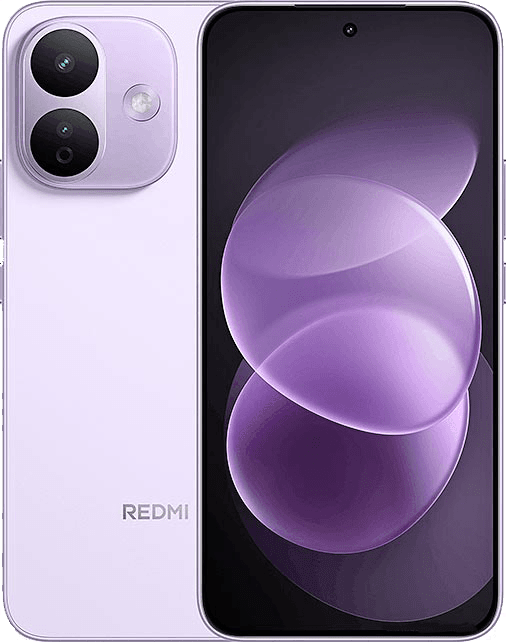
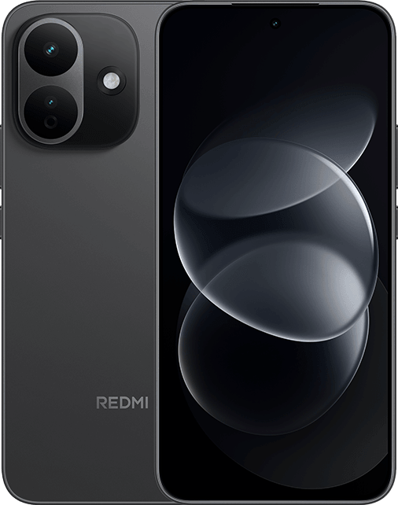
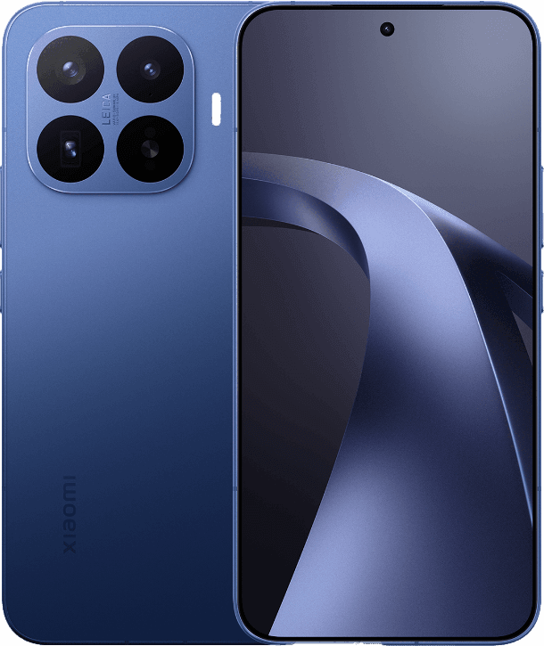
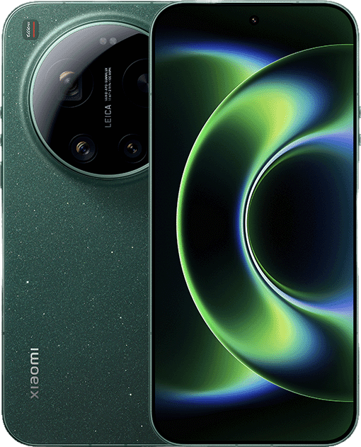
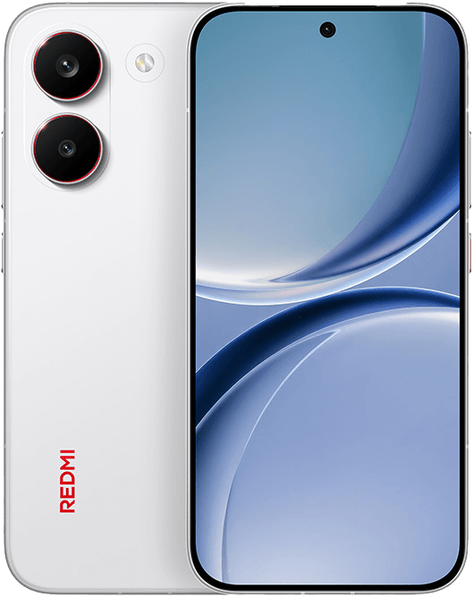
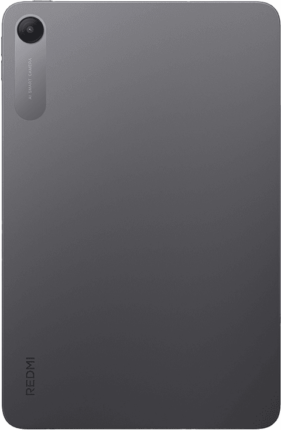

RREDMI M100steppeREDMI更新於2026-08-28已過 2 天台灣版OS3.0.302.0.WAVTWXMAndroid 16.0安全性更新：2026-06-012026-08-28(2 天前)國際版領先OS3.0.310.0.WAVMIXMAndroid 16.0安全性更新：2026-08-012026-08-24(6 天前)中國領先OS3.0.304.0.WAVCNXMAndroid 16.0安全性更新：2026-07-012026-08-27(3 天前)歐洲 EEA領先OS3.0.305.0.WAVEUXMAndroid 16.0安全性更新：2026-07-012026-08-12(18 天前)
REDMI Note 17 Pro MaxbrusselsREDMI更新於2026-08-27已過 3 天台灣版OS3.0.303.0.WDRTWXMAndroid 16.0安全性更新：2026-07-012026-08-27(3 天前)國際版同步OS3.0.303.0.WDRMIXMAndroid 16.0安全性更新：2026-07-012026-08-27(3 天前)国际 DC落後OS3.0.302.0.WDRMIDCAndroid 16.0安全性更新：2026-07-012026-08-27(3 天前)日本同步OS3.0.303.0.WDRJPXMAndroid 16.0安全性更新：2026-07-012026-08-27(3 天前)歐洲 EEA領先OS3.0.304.0.WDREUXMAndroid 16.0安全性更新：2026-07-012026-08-26(4 天前)
RREDMI Note 17 4GzephyrREDMI更新於2026-08-27已過 3 天台灣版OS3.0.304.0.WBUTWXMAndroid 16.0安全性更新：2026-08-012026-08-27(3 天前)國際版領先OS3.0.308.0.WBUMIXMAndroid 16.0安全性更新：2026-08-012026-08-27(3 天前)歐洲 EEA領先OS3.0.305.0.WBUEUDMAndroid 16.0安全性更新：2026-08-012026-08-27(3 天前)
REDMI Note 17 Pro 5GioliteREDMI更新於2026-08-27已過 3 天台灣版OS3.0.302.0.WDQTWXMAndroid 16.0安全性更新：2026-07-012026-08-27(3 天前)國際版領先OS3.0.304.0.WDQMIXMAndroid 16.0安全性更新：2026-08-012026-08-27(3 天前)国际 DC同步OS3.0.302.0.WDQMIDCAndroid 16.0安全性更新：2026-07-012026-08-27(3 天前)中國領先OS3.0.309.0.WDQCNXMAndroid 16.0安全性更新：2026-07-012026-08-25(5 天前)歐洲 EEA領先OS3.0.306.0.WDQEUXMAndroid 16.0安全性更新：2026-07-012026-08-11(19 天前)演示機系统落後OS3.0.301.0.WDQCNDMAndroid 16.0安全性更新：2026-06-012026-07-14(47 天前)
Redmi Note 13 NFCsapphirenRedmi更新於2026-08-25已過 5 天 / 棄更門檻 70 天台灣版OS2.0.211.0.VNHTWXMAndroid 15.0安全性更新：2026-08-012026-08-25(5 天前)國際版同步OS2.0.211.0.VNHMIXMAndroid 15.0安全性更新：2026-08-012026-08-25(5 天前)俄羅斯領先OS2.0.213.0.VNHRUXMAndroid 15.0安全性更新：2026-08-012026-08-25(5 天前)印尼同步OS2.0.211.0.VNHIDXMAndroid 15.0安全性更新：2026-08-012026-08-25(5 天前)歐洲 EEA領先OS2.0.214.0.VNHEUXMAndroid 15.0安全性更新：2026-08-012026-08-07(23 天前)国际 DC落後OS2.0.204.0.VNHMIDCAndroid 15.0安全性更新：2025-11-012026-04-27(125 天前)土耳其落後OS2.0.210.0.VNHTRXMAndroid 15.0安全性更新：2026-03-012026-04-22(130 天前)
Redmi Note 13 5G / 13R Pro / POCO X6 Neo 5GgoldRedmi, POCO更新於2026-08-24已過 6 天 / 棄更門檻 53 天台灣版OS3.0.4.0.VNQTWXMAndroid 15.0安全性更新：2026-08-012026-08-24(6 天前)國際版領先OS3.0.5.0.VNQMIXMAndroid 15.0安全性更新：2026-08-012026-08-20(10 天前)危地马拉Tigo電信商客製落後OS3.0.2.0.VNQGTTGAndroid 15.0安全性更新：2026-08-012026-08-27(3 天前)印尼落後OS3.0.3.0.VNQIDXMAndroid 15.0安全性更新：2026-08-012026-08-24(6 天前)土耳其同步OS3.0.4.0.VNQTRXMAndroid 15.0安全性更新：2026-08-012026-08-24(6 天前)国际 DC領先OS3.0.5.0.VNQMIDCAndroid 15.0安全性更新：2026-08-012026-08-20(10 天前)歐洲 EEA領先OS3.0.6.0.VNQEUXMAndroid 15.0安全性更新：2026-08-012026-08-20(10 天前)印度同步OS3.0.4.0.VNQINXMAndroid 15.0安全性更新：2026-08-012026-08-20(10 天前)拉丁美洲Claro電信商客製落後OS3.0.2.0.VNQLMCRAndroid 15.0安全性更新：2026-08-012026-08-18(12 天前)中國領先OS3.0.10.0.VNQCNXMAndroid 15.0安全性更新：2026-07-012026-07-27(34 天前)中國政企標準落後OS1.0.25.8.7.EP.STDEE.N17Android 14.0安全性更新：2025-09-012026-05-25(97 天前)演示機系统落後OS1.0.1.0.UNQCNDMAndroid 14.0安全性更新：2024-01-012024-05-11(841 天前)
REDMI Note 15 Pro+ 5GflouriteREDMI, POCO更新於2026-08-22已過 8 天 / 棄更門檻 190 天台灣版OS3.0.301.0.WPRTWXMAndroid 16.0安全性更新：2026-07-012026-08-22(8 天前)國際版領先OS3.0.304.0.WPRMIXMAndroid 16.0安全性更新：2026-07-012026-07-17(44 天前)中國領先OS3.0.317.0.WPRCNXMAndroid 16.0安全性更新：2026-08-012026-08-25(5 天前)国际 DC同步OS3.0.301.0.WPRMIDCAndroid 16.0安全性更新：2026-07-012026-08-22(8 天前)俄羅斯同步OS3.0.301.0.WPRRUXMAndroid 16.0安全性更新：2026-07-012026-08-22(8 天前)土耳其同步OS3.0.301.0.WPRTRXMAndroid 16.0安全性更新：2026-07-012026-08-22(8 天前)印尼同步OS3.0.301.0.WPRIDXMAndroid 16.0安全性更新：2026-07-012026-08-21(9 天前)拉丁美洲Claro電信商客製同步OS3.0.301.0.WPRLMCRAndroid 16.0安全性更新：2026-08-012026-08-21(9 天前)印度領先OS3.0.303.0.WPRINXMAndroid 16.0安全性更新：2026-07-012026-07-21(40 天前)中國政企標準領先OS3.1.26.7.15.EP.STDEE.P16UAndroid 16.0安全性更新：2026-12-012026-07-17(44 天前)歐洲 EEA領先OS3.0.306.0.WPREUXMAndroid 16.0安全性更新：2026-07-012026-07-17(44 天前)演示機系统落後OS3.0.3.0.WPRCNDMAndroid 16.0安全性更新：2025-11-012026-02-25(186 天前)
REDMI 平板 2 Pro 5GorganREDMI更新於2026-08-21已過 9 天 / 棄更門檻 192 天台灣版OS3.0.302.0.WPXTWXMAndroid 16.0安全性更新：2026-08-012026-08-21(9 天前)國際版領先OS3.0.303.0.WPXMIXMAndroid 16.0安全性更新：2026-08-012026-08-03(27 天前)印度同步OS3.0.302.0.WPXINXMAndroid 16.0安全性更新：2026-08-012026-08-12(18 天前)中國領先OS3.0.305.0.WPXCNXMAndroid 16.0安全性更新：2026-08-012026-08-10(20 天前)歐洲 EEA領先OS3.0.303.0.WPXEUXMAndroid 16.0安全性更新：2026-08-012026-08-07(23 天前)俄羅斯落後OS3.0.301.0.WPXRUXMAndroid 16.0安全性更新：2026-06-012026-07-31(30 天前)国际 DC落後OS3.0.301.0.WPXMIDCAndroid 16.0安全性更新：2026-06-012026-07-15(46 天前)
REDMI 平板 2taikoREDMI更新於2026-08-21已過 9 天 / 棄更門檻 100 天台灣版OS3.0.302.0.WOVTWXMAndroid 16.0安全性更新：2026-08-012026-08-21(9 天前)國際版領先OS3.0.304.0.WOVMIXMAndroid 16.0安全性更新：2026-08-012026-08-04(26 天前)印尼同步OS3.0.302.0.WOVIDXMAndroid 16.0安全性更新：2026-08-012026-08-21(9 天前)土耳其同步OS3.0.302.0.WOVTRXMAndroid 16.0安全性更新：2026-08-012026-08-18(12 天前)中國領先OS3.0.307.0.WOVCNXMAndroid 16.0安全性更新：2026-08-012026-08-13(17 天前)俄羅斯同步OS3.0.302.0.WOVRUXMAndroid 16.0安全性更新：2026-08-012026-08-13(17 天前)歐洲 EEA領先OS3.0.303.0.WOVEUXMAndroid 16.0安全性更新：2026-08-012026-08-10(20 天前)印度落後OS3.0.301.0.WOVINXMAndroid 16.0安全性更新：2026-07-012026-07-31(30 天前)中國政企標準落後OS3.0.26.2.2.EP.STDEE.O84Android 16.0安全性更新：2026-06-012026-06-11(80 天前)演示機系统落後OS3.0.1.0.WOVCNDMAndroid 16.0安全性更新：2025-11-012026-01-21(221 天前)
小米 14TdegasXiaomi更新於2026-08-21已過 9 天 / 棄更門檻 71 天台灣版OS3.0.303.0.WNETWXMAndroid 16.0安全性更新：2026-08-012026-08-21(9 天前)國際版同步OS3.0.303.0.WNEMIXMAndroid 16.0安全性更新：2026-08-012026-08-21(9 天前)国际 DC同步OS3.0.303.0.WNEMIDCAndroid 16.0安全性更新：2026-08-012026-08-21(9 天前)俄羅斯同步OS3.0.303.0.WNERUXMAndroid 16.0安全性更新：2026-08-012026-08-21(9 天前)土耳其同步OS3.0.303.0.WNETRXMAndroid 16.0安全性更新：2026-08-012026-08-21(9 天前)墨西哥AT&T電信商客製落後OS3.0.302.0.WNEMXATAndroid 16.0安全性更新：2026-08-012026-08-21(9 天前)拉丁美洲Claro電信商客製落後OS3.0.302.0.WNELMCRAndroid 16.0安全性更新：2026-08-012026-08-12(18 天前)歐洲 EEA領先OS3.0.304.0.WNEEUXMAndroid 16.0安全性更新：2026-07-012026-07-28(33 天前)印尼領先OS3.0.304.0.WNEIDXMAndroid 16.0安全性更新：2026-07-012026-07-21(40 天前)歐洲EEA Demo落後OS1.0.2.0.UNEEUDMAndroid 14.0安全性更新：2024-09-012025-09-26(338 天前)
REDMI 平板 2 ProfluteREDMI更新於2026-08-21已過 9 天 / 棄更門檻 61 天台灣版OS3.0.302.0.WPWTWXMAndroid 16.0安全性更新：2026-08-012026-08-21(9 天前)國際版領先OS3.0.303.0.WPWMIXMAndroid 16.0安全性更新：2026-08-012026-08-03(27 天前)印尼同步OS3.0.302.0.WPWIDXMAndroid 16.0安全性更新：2026-08-012026-08-21(9 天前)土耳其同步OS3.0.302.0.WPWTRXMAndroid 16.0安全性更新：2026-08-012026-08-21(9 天前)印度同步OS3.0.302.0.WPWINXMAndroid 16.0安全性更新：2026-08-012026-08-12(18 天前)中國領先OS3.0.308.0.WPWCNXMAndroid 16.0安全性更新：2026-08-012026-08-10(20 天前)歐洲 EEA領先OS3.0.303.0.WPWEUXMAndroid 16.0安全性更新：2026-08-012026-08-07(23 天前)俄羅斯落後OS3.0.301.0.WPWRUXMAndroid 16.0安全性更新：2026-07-012026-07-27(34 天前)演示機系统落後OS3.0.4.0.WPWCNDMAndroid 16.0安全性更新：2026-01-012026-02-12(199 天前)印尼 Demo落後OS2.0.206.0.VPWIDDMAndroid 15.0安全性更新：2025-11-012025-11-19(284 天前)歐洲EEA Demo落後OS2.0.208.0.VPWEUDMAndroid 15.0安全性更新：2025-08-012025-09-25(339 天前)
REDMI Pad 2 SEguitarREDMI更新於2026-08-19已過 11 天 / 棄更門檻 206 天台灣版OS3.0.303.0.WDNTWXMAndroid 16.0安全性更新：2026-07-012026-08-19(11 天前)國際版領先OS3.0.306.0.WDNMIXMAndroid 16.0安全性更新：2026-07-012026-08-05(25 天前)俄羅斯領先OS3.0.306.0.WDNRUXMAndroid 16.0安全性更新：2026-08-012026-08-19(11 天前)歐洲 EEA同步OS3.0.303.0.WDNEUXMAndroid 16.0安全性更新：2026-07-012026-08-14(16 天前)印尼同步OS3.0.303.0.WDNIDXMAndroid 16.0安全性更新：2026-07-012026-08-14(16 天前)土耳其領先OS3.0.304.0.WDNTRXMAndroid 16.0安全性更新：2026-07-012026-08-14(16 天前)中國同步OS3.0.303.0.WDNCNXMAndroid 16.0安全性更新：2026-07-012026-07-20(41 天前)歐洲EEA Demo落後OS3.0.301.0.WDNEUDMAndroid 16.0安全性更新：2026-03-012026-04-28(124 天前)
Xiaomi 17T ProwarholXiaomi更新於2026-08-19已過 11 天 / 棄更門檻 70 天台灣版OS3.0.305.0.WPSTWXMAndroid 16.0安全性更新：2026-08-012026-08-19(11 天前)國際版領先OS3.0.310.0.WPSMIXMAndroid 16.0安全性更新：2026-08-012026-08-10(20 天前)Beta領先OS4.0.0.3.XPSCNXMAndroid 17.0安全性更新：2026-08-012026-08-27(3 天前)印尼同步OS3.0.305.0.WPSIDXMAndroid 16.0安全性更新：2026-08-012026-08-21(9 天前)俄羅斯領先OS3.0.306.0.WPSRUXMAndroid 16.0安全性更新：2026-08-012026-08-19(11 天前)土耳其同步OS3.0.305.0.WPSTRXMAndroid 16.0安全性更新：2026-08-012026-08-19(11 天前)日本同步OS3.0.305.0.WPSJPXMAndroid 16.0安全性更新：2026-08-012026-08-19(11 天前)国际 DC領先OS3.0.306.0.WPSMIDCAndroid 16.0安全性更新：2026-08-012026-08-10(20 天前)中國領先OS3.0.309.0.WPSCNXMAndroid 16.0安全性更新：2026-08-012026-08-04(26 天前)歐洲 EEA領先OS3.0.311.0.WPSEUXMAndroid 16.0安全性更新：2026-08-012026-08-04(26 天前)拉丁美洲Claro電信商客製落後OS3.0.304.0.WPSLMCRAndroid 16.0安全性更新：2026-07-012026-07-13(48 天前)演示機系统落後OS3.0.302.0.WPSCNDMAndroid 16.0安全性更新：2026-05-012026-06-08(83 天前)印尼 Demo落後OS3.0.302.0.WPSIDDMAndroid 16.0安全性更新：2026-04-012026-06-04(87 天前)国际 Demo落後OS3.0.302.0.WPSMIDMAndroid 16.0安全性更新：2026-04-012026-05-28(94 天前)歐洲EEA Demo落後OS3.0.303.0.WPSEUDMAndroid 16.0安全性更新：2026-04-012026-05-28(94 天前)
REDMI Turbo 5 MAX / POCO X8 Pro MAXdashPOCO更新於2026-08-19已過 11 天 / 棄更門檻 69 天台灣版OS3.0.303.0.WPLTWXMAndroid 16.0安全性更新：2026-08-012026-08-19(11 天前)國際版同步OS3.0.303.0.WPLMIXMAndroid 16.0安全性更新：2026-08-012026-08-01(29 天前)俄羅斯領先OS3.0.304.0.WPLRUXMAndroid 16.0安全性更新：2026-08-012026-08-25(5 天前)印度同步OS3.0.303.0.WPLINXMAndroid 16.0安全性更新：2026-08-012026-08-17(13 天前)印尼同步OS3.0.303.0.WPLIDXMAndroid 16.0安全性更新：2026-08-012026-08-17(13 天前)歐洲 EEA同步OS3.0.303.0.WPLEUXMAndroid 16.0安全性更新：2026-08-012026-08-14(16 天前)中國領先OS3.0.305.0.WPLCNXMAndroid 16.0安全性更新：2026-06-012026-07-09(52 天前)演示機系统落後OS3.0.301.0.WPLCNDMAndroid 16.0安全性更新：2026-02-012026-04-14(138 天前)土耳其落後OS3.0.1.0.WPLTRXMAndroid 16.0安全性更新：2026-02-012026-03-17(166 天前)
小米 17puddingXiaomi更新於2026-08-17已過 13 天 / 棄更門檻 158 天台灣版OS3.0.303.0.WPCTWXMAndroid 16.0安全性更新：2026-08-012026-08-17(13 天前)國際版同步OS3.0.303.0.WPCMIXMAndroid 16.0安全性更新：2026-07-012026-07-22(39 天前)Beta領先OS4.0.0.16.XPCCNXMAndroid 17.0安全性更新：2026-08-012026-08-25(5 天前)土耳其同步OS3.0.303.0.WPCTRXMAndroid 16.0安全性更新：2026-08-012026-08-19(11 天前)歐洲 EEA同步OS3.0.303.0.WPCEUXMAndroid 16.0安全性更新：2026-07-012026-08-17(13 天前)拉丁美洲Claro電信商客製同步OS3.0.303.0.WPCLMCRAndroid 16.0安全性更新：2026-08-012026-08-17(13 天前)俄羅斯同步OS3.0.303.0.WPCRUXMAndroid 16.0安全性更新：2026-08-012026-08-14(16 天前)印尼同步OS3.0.303.0.WPCIDXMAndroid 16.0安全性更新：2026-08-012026-08-14(16 天前)中國領先OS3.0.318.0.WPCCNXMAndroid 16.0安全性更新：2026-07-012026-08-07(23 天前)国际 DC領先OS3.0.304.0.WPCMIDCAndroid 16.0安全性更新：2026-07-012026-08-05(25 天前)印度領先OS3.0.304.0.WPCINXMAndroid 16.0安全性更新：2026-07-012026-08-05(25 天前)安卓开发者预览大陆領先OS3.3.260512.2.XPCCNXM.STABLE-DPPAndroid 17.0安全性更新：2026-04-012026-05-18(104 天前)安卓开发者预览国际領先OS3.3.260512.2.XPCMIXM.STABLE-DPPAndroid 17.0安全性更新：2026-04-012026-05-18(104 天前)演示機系统落後OS3.0.6.0.WPCCNDMAndroid 16.0安全性更新：2025-11-012025-12-16(257 天前)
小米平板 7 PromuyuXiaomi更新於2026-08-15已過 15 天 / 棄更門檻 70 天台灣版OS3.0.304.0.WOYTWXMAndroid 16.0安全性更新：2026-07-012026-08-15(15 天前)國際版落後OS3.0.303.0.WOYMIXMAndroid 16.0安全性更新：2026-07-012026-07-13(48 天前)土耳其同步OS3.0.304.0.WOYTRXMAndroid 16.0安全性更新：2026-07-012026-08-15(15 天前)俄羅斯同步OS3.0.304.0.WOYRUXMAndroid 16.0安全性更新：2026-07-012026-08-14(16 天前)歐洲 EEA同步OS3.0.304.0.WOYEUXMAndroid 16.0安全性更新：2026-07-012026-08-04(26 天前)印尼同步OS3.0.304.0.WOYIDXMAndroid 16.0安全性更新：2026-07-012026-08-04(26 天前)中國落後OS3.0.302.0.WOYCNXMAndroid 16.0安全性更新：2026-05-012026-06-18(73 天前)歐洲EEA Demo落後OS2.0.100.0.VOYEUDMAndroid 15.0安全性更新：2025-02-012025-09-26(338 天前)Beta落後OS3.0.0.21.WOYCNXMAndroid 16.0安全性更新：2025-08-012025-09-25(339 天前)演示機系统落後OS2.0.200.0.VOYCNDMAndroid 15.0安全性更新：2025-05-012025-07-25(401 天前)中國政企標準落後OS2.0.4.241122.VOYCNXM.EP.STDEEAndroid 15.0安全性更新：2025-05-052025-04-01(516 天前)
REDMI K90 Pro Max / POCO F8 UltramyronPOCO更新於2026-08-15已過 15 天 / 棄更門檻 147 天台灣版OS3.0.302.0.WPMTWXMAndroid 16.0安全性更新：2026-07-012026-08-15(15 天前)國際版同步OS3.0.302.0.WPMMIXMAndroid 16.0安全性更新：2026-07-012026-08-15(15 天前)Beta領先OS4.0.0.21.XPMCNXMAndroid 17.0安全性更新：2026-08-012026-08-25(5 天前)中國領先OS3.0.309.0.WPMCNXMAndroid 16.0安全性更新：2026-07-012026-08-19(11 天前)印尼同步OS3.0.302.0.WPMIDXMAndroid 16.0安全性更新：2026-07-012026-08-14(16 天前)歐洲 EEA同步OS3.0.302.0.WPMEUXMAndroid 16.0安全性更新：2026-07-012026-07-27(34 天前)演示機系统落後OS3.0.3.0.WPMCNDMAndroid 16.0安全性更新：2025-11-012026-01-05(237 天前)
REDMI Note 15 4GspinelREDMI更新於2026-08-15已過 15 天 / 棄更門檻 160 天台灣版OS3.0.301.0.WPGTWXMAndroid 16.0安全性更新：2026-07-012026-08-15(15 天前)國際版領先OS3.0.302.0.WPGMIXMAndroid 16.0安全性更新：2026-08-012026-08-04(26 天前)土耳其同步OS3.0.301.0.WPGTRXMAndroid 16.0安全性更新：2026-07-012026-08-04(26 天前)拉丁美洲Claro電信商客製落後OS3.0.3.0.WPGLMCRAndroid 16.0安全性更新：2026-08-012026-08-04(26 天前)俄羅斯同步OS3.0.301.0.WPGRUXMAndroid 16.0安全性更新：2026-07-012026-07-17(44 天前)印尼同步OS3.0.301.0.WPGIDXMAndroid 16.0安全性更新：2026-07-012026-07-17(44 天前)国际 DC同步OS3.0.301.0.WPGMIDCAndroid 16.0安全性更新：2026-07-012026-07-10(51 天前)歐洲 EEA同步OS3.0.301.0.WPGEUXMAndroid 16.0安全性更新：2026-07-012026-07-10(51 天前)
小米平板 7ukeXiaomi, POCO更新於2026-08-14已過 16 天 / 棄更門檻 82 天台灣版OS3.0.303.0.WOZTWXMAndroid 16.0安全性更新：2026-07-012026-08-14(16 天前)國際版同步OS3.0.303.0.WOZMIXMAndroid 16.0安全性更新：2026-07-012026-07-16(45 天前)土耳其同步OS3.0.303.0.WOZTRXMAndroid 16.0安全性更新：2026-07-012026-08-14(16 天前)俄羅斯同步OS3.0.303.0.WOZRUXMAndroid 16.0安全性更新：2026-07-012026-08-07(23 天前)印尼同步OS3.0.303.0.WOZIDXMAndroid 16.0安全性更新：2026-07-012026-08-07(23 天前)歐洲 EEA同步OS3.0.303.0.WOZEUXMAndroid 16.0安全性更新：2026-07-012026-07-21(40 天前)印度領先OS3.0.304.0.WOZINXMAndroid 16.0安全性更新：2026-07-012026-07-21(40 天前)中國落後OS3.0.302.0.WOZCNXMAndroid 16.0安全性更新：2026-05-012026-06-16(75 天前)Beta落後OS3.0.2.1.WOZCNXMAndroid 16.0安全性更新：2025-10-012025-10-14(320 天前)歐洲EEA Demo落後OS2.0.100.0.VOZEUDMAndroid 15.0安全性更新：2025-02-012025-09-26(338 天前)演示機系统落後OS2.0.200.0.VOZCNDMAndroid 15.0安全性更新：2025-05-012025-07-25(401 天前)中國政企標準落後OS2.0.7.241126.VOZCNXM.EP.STDEEAndroid 15.0安全性更新：2025-04-052024-12-12(626 天前)
小米 15 UltraxuanyuanXiaomi更新於2026-08-14已過 16 天 / 棄更門檻 96 天台灣版OS3.0.302.0.WOATWXMAndroid 16.0安全性更新：2026-07-012026-08-14(16 天前)國際版同步OS3.0.302.0.WOAMIXMAndroid 16.0安全性更新：2026-07-012026-07-30(31 天前)Beta領先OS4.0.0.6.XOACNXMAndroid 17.0安全性更新：2026-08-012026-08-29(1 天前)俄羅斯同步OS3.0.302.0.WOARUXMAndroid 16.0安全性更新：2026-07-012026-08-14(16 天前)印尼同步OS3.0.302.0.WOAIDXMAndroid 16.0安全性更新：2026-07-012026-08-06(24 天前)印度同步OS3.0.302.0.WOAINXMAndroid 16.0安全性更新：2026-07-012026-08-05(25 天前)中國領先OS3.0.312.0.WOACNXMAndroid 16.0安全性更新：2026-06-012026-07-31(30 天前)歐洲 EEA領先OS3.0.303.0.WOAEUXMAndroid 16.0安全性更新：2026-07-012026-07-24(37 天前)国际 DC領先OS3.0.303.0.WOAMIDCAndroid 16.0安全性更新：2026-06-012026-07-10(51 天前)演示機系统落後OS3.0.1.0.WOACNDMAndroid 16.0安全性更新：2025-11-012026-01-08(234 天前)歐洲EEA Demo落後OS2.0.2.0.VOAEUDMAndroid 15.0安全性更新：2025-01-012025-09-26(338 天前)中國政企標準落後OS2.0.103.250324.VOACNXM.EP.STDEEAndroid 15.0安全性更新：2025-01-012025-05-27(460 天前)印尼 Demo落後OS2.0.3.0.VOAIDDMAndroid 15.0安全性更新：2025-02-012025-03-06(542 天前)土耳其落後OS2.0.2.0.VOATRXMAndroid 15.0安全性更新：2025-01-012025-03-02(546 天前)
Redmi Note 13 Pro 5G / POCO X6 5GgarnetRedmi, POCO更新於2026-08-14已過 16 天 / 棄更門檻 84 天台灣版OS3.0.302.0.WNRTWXMAndroid 16.0安全性更新：2026-08-012026-08-14(16 天前)國際版同步OS3.0.302.0.WNRMIXMAndroid 16.0安全性更新：2026-07-012026-07-29(32 天前)拉丁美洲Claro電信商客製落後OS3.0.5.0.WNRLMCRAndroid 16.0安全性更新：2026-08-012026-08-20(10 天前)国际 DC同步OS3.0.302.0.WNRMIDCAndroid 16.0安全性更新：2026-08-012026-08-14(16 天前)歐洲 EEA同步OS3.0.302.0.WNREUXMAndroid 16.0安全性更新：2026-08-012026-08-14(16 天前)俄羅斯同步OS3.0.302.0.WNRRUXMAndroid 16.0安全性更新：2026-08-012026-08-14(16 天前)印尼同步OS3.0.302.0.WNRIDXMAndroid 16.0安全性更新：2026-08-012026-08-14(16 天前)土耳其同步OS3.0.302.0.WNRTRXMAndroid 16.0安全性更新：2026-08-012026-08-14(16 天前)中國領先OS3.0.306.0.WNRCNXMAndroid 16.0安全性更新：2026-07-012026-07-23(38 天前)印度落後OS3.0.301.0.WNRINXMAndroid 16.0安全性更新：2026-05-012026-07-06(55 天前)中國 CJCC 政企客製落後OS1.0.25.7.3.EP.CJCC.N16Android 14.0安全性更新：2024-12-012025-07-10(416 天前)中國政企標準落後OS1.0.24.6.24.EP.STDEE.N16Android 14.0安全性更新：2024-07-012024-08-01(759 天前)演示機系统落後OS1.0.1.0.UNRCNDMAndroid 14.0安全性更新：2024-03-012024-05-13(839 天前)
Redmi K60 至尊版 / 小米 13T ProcorotXiaomi更新於2026-08-13已過 17 天 / 棄更門檻 107 天台灣版OS3.0.301.0.WMLTWXMAndroid 16.0安全性更新：2026-07-012026-08-13(17 天前)國際版同步OS3.0.301.0.WMLMIXMAndroid 16.0安全性更新：2026-07-012026-07-22(39 天前)歐洲 EEA領先OS3.0.306.0.WMLEUXMAndroid 16.0安全性更新：2026-08-012026-08-25(5 天前)中國領先OS3.0.304.0.WMLCNXMAndroid 16.0安全性更新：2026-08-012026-08-21(9 天前)俄羅斯同步OS3.0.301.0.WMLRUXMAndroid 16.0安全性更新：2026-07-012026-08-13(17 天前)土耳其同步OS3.0.301.0.WMLTRXMAndroid 16.0安全性更新：2026-07-012026-08-13(17 天前)日本落後OS2.0.210.0.VMLJPXMAndroid 15.0安全性更新：2026-04-012026-05-08(114 天前)Beta落後OS2.0.0.32.VMLCNXMAndroid 15.0安全性更新：2024-11-012024-12-06(632 天前)体验增强 Beta落後OS1.1.6.0.VMLCNXM.BETAAndroid 15.0安全性更新：2024-09-052024-10-17(682 天前)安卓开发者预览大陆落後OS1.0.240808.1.VMLCNXMPRE-DPPAndroid 15.0安全性更新：2024-06-052024-08-20(740 天前)安卓开发者预览国际落後OS1.0.240705.2.VMLMIXM.PRE-DPPAndroid 15.0安全性更新：2024-06-052024-07-12(779 天前)
REDMI K Pad / Xiaomi Pad MiniturnerXiaomi更新於2026-08-13已過 17 天 / 棄更門檻 161 天台灣版OS3.0.303.0.WAOTWXMAndroid 16.0安全性更新：2026-08-012026-08-13(17 天前)國際版領先OS3.0.304.0.WAOMIXMAndroid 16.0安全性更新：2026-08-012026-08-12(18 天前)中國領先OS3.0.308.0.WAOCNXMAndroid 16.0安全性更新：2026-08-012026-08-13(17 天前)演示機系统落後OS3.0.1.0.WAOCNDMAndroid 16.0安全性更新：2025-12-012026-03-04(179 天前)Beta落後OS3.0.1.2.WAOCNXMAndroid 16.0安全性更新：2025-10-012025-10-14(320 天前)
Redmi Turbo 3 / POCO F6peridotPOCO更新於2026-08-12已過 18 天 / 棄更門檻 59 天台灣版OS3.0.303.0.WNPTWXMAndroid 16.0安全性更新：2026-07-012026-08-12(18 天前)國際版同步OS3.0.303.0.WNPMIXMAndroid 16.0安全性更新：2026-07-012026-08-12(18 天前)歐洲 EEA同步OS3.0.303.0.WNPEUXMAndroid 16.0安全性更新：2026-08-012026-08-20(10 天前)俄羅斯領先OS3.0.304.0.WNPRUXMAndroid 16.0安全性更新：2026-07-012026-08-12(18 天前)印度同步OS3.0.303.0.WNPINXMAndroid 16.0安全性更新：2026-07-012026-08-12(18 天前)印尼領先OS3.0.304.0.WNPIDXMAndroid 16.0安全性更新：2026-07-012026-08-12(18 天前)中國領先OS3.0.304.0.WNPCNXMAndroid 16.0安全性更新：2026-06-012026-07-01(60 天前)中國政企標準落後OS1.0.25.1.7.EP.STDEE.N16TAndroid 14.0安全性更新：2025-01-012025-02-13(563 天前)演示機系统落後OS1.0.7.0.UNPCNDMAndroid 14.0安全性更新：2024-08-012024-09-11(718 天前)
REDMI 15C / POCO C85dewREDMI, POCO更新於2026-08-12已過 18 天 / 棄更門檻 193 天台灣版OS2.0.207.0.VBNTWXMAndroid 15.0安全性更新：2026-07-012026-08-12(18 天前)國際版領先OS3.0.306.0.WBNMIXMAndroid 16.0安全性更新：2026-08-012026-07-31(30 天前)歐洲 EEA領先OS3.0.301.0.WBNEUXMAndroid 16.0安全性更新：2026-08-012026-08-14(16 天前)俄羅斯領先OS3.0.305.0.WBNRUXMAndroid 16.0安全性更新：2026-08-012026-08-13(17 天前)国际 DC領先OS3.0.301.0.WBNMIDCAndroid 16.0安全性更新：2026-07-012026-08-04(26 天前)土耳其領先OS3.0.301.0.WBNTRXMAndroid 16.0安全性更新：2026-08-012026-07-31(30 天前)拉丁美洲Claro電信商客製領先OS2.0.208.0.VBNLMCRAndroid 15.0安全性更新：2026-07-012026-07-31(30 天前)印尼領先OS3.0.301.0.WBNIDXMAndroid 16.0安全性更新：2026-07-012026-07-21(40 天前)墨西哥AT&T電信商客製領先OS2.0.209.0.VBNMXATAndroid 15.0安全性更新：2026-05-012026-06-30(61 天前)危地马拉Tigo電信商客製落後OS2.0.206.0.VBNGTTGAndroid 15.0安全性更新：2025-11-012025-12-08(265 天前)
REDMI K80 Pro / POCO F7 UltramiroPOCO更新於2026-08-12已過 18 天 / 棄更門檻 61 天台灣版OS3.0.302.0.WOMTWXMAndroid 16.0安全性更新：2026-08-012026-08-12(18 天前)國際版同步OS3.0.302.0.WOMMIXMAndroid 16.0安全性更新：2026-08-012026-08-12(18 天前)歐洲 EEA同步OS3.0.302.0.WOMEUXMAndroid 16.0安全性更新：2026-08-012026-08-12(18 天前)俄羅斯同步OS3.0.302.0.WOMRUXMAndroid 16.0安全性更新：2026-08-012026-08-12(18 天前)印尼同步OS3.0.302.0.WOMIDXMAndroid 16.0安全性更新：2026-08-012026-08-12(18 天前)中國領先OS3.0.304.0.WOMCNXMAndroid 16.0安全性更新：2026-08-012026-08-10(20 天前)Beta領先OS3.0.303.8.WOMCNXMAndroid 16.0安全性更新：2026-05-012026-07-16(45 天前)土耳其落後OS3.0.3.0.WOMTRXMAndroid 16.0安全性更新：2025-12-012025-12-28(245 天前)演示機系统落後OS2.0.200.0.VOMCNDMAndroid 15.0安全性更新：2025-05-012025-06-27(429 天前)
小米 14houjiXiaomi更新於2026-08-10已過 20 天 / 棄更門檻 83 天台灣版OS3.0.303.0.WNCTWXMAndroid 16.0安全性更新：2026-07-012026-08-10(20 天前)國際版同步OS3.0.303.0.WNCMIXMAndroid 16.0安全性更新：2026-07-012026-08-05(25 天前)俄羅斯領先OS3.0.304.0.WNCRUXMAndroid 16.0安全性更新：2026-07-012026-08-10(20 天前)印度同步OS3.0.303.0.WNCINXMAndroid 16.0安全性更新：2026-07-012026-08-10(20 天前)印尼同步OS3.0.303.0.WNCIDXMAndroid 16.0安全性更新：2026-07-012026-08-10(20 天前)中國領先OS3.0.305.0.WNCCNXMAndroid 16.0安全性更新：2026-07-012026-08-05(25 天前)歐洲 EEA同步OS3.0.303.0.WNCEUXMAndroid 16.0安全性更新：2026-07-012026-07-29(32 天前)Beta落後OS3.0.300.6.WNCCNXMAndroid 16.0安全性更新：2026-02-012026-03-06(177 天前)演示機系统落後OS2.0.208.0.VNCCNDMAndroid 15.0安全性更新：2025-05-012025-07-04(422 天前)中國政企標準落後OS2.0.7.241219.VNCCNXM.EP.STDEEAndroid 15.0安全性更新：2025-01-012025-01-23(584 天前)体验增强 Beta落後OS1.1.6.0.VNCCNXM.BETAAndroid 15.0安全性更新：2024-09-052024-10-17(682 天前)安卓开发者预览大陆落後OS1.0.240808.1.VNCCNXMPRE-DPPAndroid 15.0安全性更新：2024-07-052024-08-20(740 天前)開發版落後OS1.0.24.7.28.DEVAndroid 14.0安全性更新：2024-07-012024-08-02(758 天前)安卓开发者预览国际落後OS1.0.240705.2.VNCMIXM.PRE-DPPAndroid 15.0安全性更新：2024-06-052024-07-12(779 天前)土耳其落後OS1.0.1.0.UNCTRXMAndroid 14.0安全性更新：2023-11-012024-02-29(913 天前)
小米平板 8 PropianoXiaomi更新於2026-08-10已過 20 天 / 棄更門檻 266 天台灣版OS3.0.303.0.WPYTWXMAndroid 16.0安全性更新：2026-07-012026-08-10(20 天前)國際版同步OS3.0.303.0.WPYMIXMAndroid 16.0安全性更新：2026-07-012026-07-09(52 天前)Beta領先OS4.0.0.31.XPYCNXMAndroid 17.0安全性更新：2026-08-012026-08-25(5 天前)土耳其同步OS3.0.303.0.WPYTRXMAndroid 16.0安全性更新：2026-07-012026-08-11(19 天前)俄羅斯領先OS3.0.304.0.WPYRUXMAndroid 16.0安全性更新：2026-07-012026-08-10(20 天前)印尼同步OS3.0.303.0.WPYIDXMAndroid 16.0安全性更新：2026-07-012026-08-10(20 天前)歐洲 EEA領先OS3.0.305.0.WPYEUXMAndroid 16.0安全性更新：2026-07-012026-08-03(27 天前)中國領先OS3.0.307.0.WPYCNXMAndroid 16.0安全性更新：2026-07-012026-07-20(41 天前)演示機系统落後OS3.0.7.0.WPYCNDMAndroid 16.0安全性更新：2025-08-012025-10-15(319 天前)
小米平板 8yupeiXiaomi更新於2026-08-10已過 20 天 / 棄更門檻 266 天台灣版OS3.0.303.0.WPZTWXMAndroid 16.0安全性更新：2026-07-012026-08-10(20 天前)國際版同步OS3.0.303.0.WPZMIXMAndroid 16.0安全性更新：2026-07-012026-07-10(51 天前)Beta領先OS4.0.0.33.XPZCNXMAndroid 17.0安全性更新：2026-08-012026-08-25(5 天前)俄羅斯領先OS3.0.304.0.WPZRUXMAndroid 16.0安全性更新：2026-07-012026-08-11(19 天前)印尼同步OS3.0.303.0.WPZIDXMAndroid 16.0安全性更新：2026-07-012026-08-11(19 天前)土耳其同步OS3.0.303.0.WPZTRXMAndroid 16.0安全性更新：2026-07-012026-08-11(19 天前)印度同步OS3.0.303.0.WPZINXMAndroid 16.0安全性更新：2026-07-012026-08-10(20 天前)歐洲 EEA領先OS3.0.305.0.WPZEUXMAndroid 16.0安全性更新：2026-07-012026-08-04(26 天前)中國領先OS3.0.309.0.WPZCNXMAndroid 16.0安全性更新：2026-07-012026-07-30(31 天前)印尼 Demo落後OS3.0.302.0.WPZIDDMAndroid 16.0安全性更新：2026-03-012026-04-10(142 天前)演示機系统落後OS3.0.7.0.WPZCNDMAndroid 16.0安全性更新：2025-08-012025-10-15(319 天前)
REDMI 平板 2 4GkotoREDMI更新於2026-08-07已過 23 天 / 棄更門檻 97 天台灣版OS3.0.302.0.WOWTWXMAndroid 16.0安全性更新：2026-08-012026-08-07(23 天前)國際版領先OS3.0.304.0.WOWMIXMAndroid 16.0安全性更新：2026-07-012026-08-04(26 天前)印尼同步OS3.0.302.0.WOWIDXMAndroid 16.0安全性更新：2026-08-012026-08-28(2 天前)国际 DC同步OS3.0.302.0.WOWMIDCAndroid 16.0安全性更新：2026-08-012026-08-10(20 天前)俄羅斯同步OS3.0.302.0.WOWRUXMAndroid 16.0安全性更新：2026-08-012026-08-07(23 天前)歐洲 EEA同步OS3.0.302.0.WOWEUXMAndroid 16.0安全性更新：2026-07-012026-07-31(30 天前)印度落後OS3.0.301.0.WOWINXMAndroid 16.0安全性更新：2026-07-012026-07-17(44 天前)
Redmi K50 至尊版 / 小米 12T ProditingXiaomi更新於2026-08-05已過 25 天 / 棄更門檻 72 天台灣版OS3.0.4.0.VLFTWXMAndroid 15.0安全性更新：2026-07-012026-08-05(25 天前)國際版領先OS3.0.5.0.VLFMIXMAndroid 15.0安全性更新：2026-07-012026-07-23(38 天前)日本落後OS1.0.27.0.ULFJPXMAndroid 14.0安全性更新：2026-07-012026-08-05(25 天前)俄羅斯同步OS3.0.4.0.VLFRUXMAndroid 15.0安全性更新：2026-07-012026-07-29(32 天前)土耳其同步OS3.0.4.0.VLFTRXMAndroid 15.0安全性更新：2026-07-012026-07-29(32 天前)歐洲 EEA同步OS3.0.4.0.VLFEUXMAndroid 15.0安全性更新：2026-07-012026-07-23(38 天前)中國落後OS3.0.3.0.VLFCNXMAndroid 15.0安全性更新：2026-06-012026-06-24(67 天前)墨西哥AT&T電信商客製落後OS2.0.207.0.VLFMXATAndroid 15.0安全性更新：2026-05-012026-06-02(89 天前)智利Entel電信商客製落後OS2.0.202.0.VLFCLENAndroid 15.0安全性更新：2026-01-012026-03-22(161 天前)拉丁美洲Claro電信商客製落後OS1.0.6.0.ULFLMCRAndroid 14.0安全性更新：2025-03-012025-03-19(529 天前)開發版落後OS1.0.24.7.28.DEVAndroid 14.0安全性更新：2024-07-012024-08-02(758 天前)
Redmi Pad Pro / 哈利·波特版 / POCO PaddiziRedmi, POCO更新於2026-08-04已過 26 天 / 棄更門檻 48 天台灣版OS3.0.302.0.WNSTWXMAndroid 16.0安全性更新：2026-08-012026-08-04(26 天前)國際版領先OS3.0.303.0.WNSMIXMAndroid 16.0安全性更新：2026-08-012026-08-18(12 天前)歐洲 EEA領先OS3.0.303.0.WNSEUXMAndroid 16.0安全性更新：2026-08-012026-08-18(12 天前)印度領先OS3.0.303.0.WNSINXMAndroid 16.0安全性更新：2026-08-012026-08-18(12 天前)中國領先OS3.0.307.0.WNSCNXMAndroid 16.0安全性更新：2026-08-012026-08-11(19 天前)俄羅斯領先OS3.0.303.0.WNSRUXMAndroid 16.0安全性更新：2026-08-012026-08-11(19 天前)印尼同步OS3.0.302.0.WNSIDXMAndroid 16.0安全性更新：2026-08-012026-08-04(26 天前)土耳其領先OS3.0.303.0.WNSTRXMAndroid 16.0安全性更新：2026-07-012026-07-31(30 天前)演示機系统落後OS2.0.201.0.VNSCNDMAndroid 15.0安全性更新：2025-06-012025-07-25(401 天前)
Redmi K70 / POCO F6 ProvermeerPOCO更新於2026-08-03已過 27 天 / 棄更門檻 73 天台灣版OS3.0.302.0.WNKTWXMAndroid 16.0安全性更新：2026-07-012026-08-03(27 天前)國際版領先OS3.0.303.0.WNKMIXMAndroid 16.0安全性更新：2026-06-012026-07-11(50 天前)俄羅斯同步OS3.0.302.0.WNKRUXMAndroid 16.0安全性更新：2026-07-012026-07-29(32 天前)歐洲 EEA同步OS3.0.302.0.WNKEUXMAndroid 16.0安全性更新：2026-07-012026-07-23(38 天前)中國領先OS3.0.306.0.WNKCNXMAndroid 16.0安全性更新：2026-07-012026-07-16(45 天前)Beta落後OS3.0.0.11.WNKCNXMAndroid 16.0安全性更新：2025-10-012025-10-28(306 天前)中國政企標準落後OS1.0.24.9.5.EP.STDEE.N11Android 14.0安全性更新：2024-10-012024-10-09(690 天前)演示機系统落後OS1.0.5.0.UNKCNDMAndroid 14.0安全性更新：2024-08-012024-09-12(717 天前)
小米 13 PronuwaXiaomi更新於2026-07-30已過 31 天 / 棄更門檻 117 天台灣版OS3.0.302.0.WMBTWXMAndroid 16.0安全性更新：2026-07-012026-07-30(31 天前)國際版同步OS3.0.302.0.WMBMIXMAndroid 16.0安全性更新：2026-07-012026-07-24(37 天前)俄羅斯同步OS3.0.302.0.WMBRUXMAndroid 16.0安全性更新：2026-07-012026-07-24(37 天前)印度同步OS3.0.302.0.WMBINXMAndroid 16.0安全性更新：2026-07-012026-07-24(37 天前)中國領先OS3.0.310.0.WMBCNXMAndroid 16.0安全性更新：2026-07-012026-07-14(47 天前)歐洲 EEA同步OS3.0.302.0.WMBEUXMAndroid 16.0安全性更新：2026-07-012026-07-14(47 天前)Beta落後OS2.0.200.10.VMBCNXMAndroid 15.0安全性更新：2025-05-012025-05-27(460 天前)開發版落後OS1.0.24.7.28.DEVAndroid 14.0安全性更新：2024-07-012024-08-02(758 天前)
Redmi Note 13 Pro+ 5GzirconRedmi更新於2026-07-30已過 31 天 / 棄更門檻 68 天台灣版OS3.0.301.0.WNOTWXMAndroid 16.0安全性更新：2026-06-012026-07-30(31 天前)國際版同步OS3.0.301.0.WNOMIXMAndroid 16.0安全性更新：2026-04-012026-05-27(95 天前)国际 DC領先OS3.0.303.0.WNOMIDCAndroid 16.0安全性更新：2026-08-012026-08-18(12 天前)拉丁美洲Claro電信商客製領先OS3.0.303.0.WNOLMCRAndroid 16.0安全性更新：2026-08-012026-08-18(12 天前)印度同步OS3.0.301.0.WNOINXMAndroid 16.0安全性更新：2026-06-012026-08-11(19 天前)俄羅斯同步OS3.0.301.0.WNORUXMAndroid 16.0安全性更新：2026-06-012026-07-24(37 天前)印尼同步OS3.0.301.0.WNOIDXMAndroid 16.0安全性更新：2026-06-012026-07-24(37 天前)日本領先OS3.0.303.0.WNOJPXMAndroid 16.0安全性更新：2026-06-012026-07-24(37 天前)土耳其同步OS3.0.301.0.WNOTRXMAndroid 16.0安全性更新：2026-06-012026-07-22(39 天前)歐洲 EEA領先OS3.0.302.0.WNOEUXMAndroid 16.0安全性更新：2026-06-012026-07-03(58 天前)中國領先OS3.0.303.0.WNOCNXMAndroid 16.0安全性更新：2026-03-012026-04-22(130 天前)演示機系统落後OS1.0.1.0.UNOCNDMAndroid 14.0安全性更新：2024-05-012024-05-16(836 天前)
REDMI Turbo 4 / POCO X7 ProrodinPOCO更新於2026-07-30已過 31 天 / 棄更門檻 60 天台灣版OS3.0.301.0.WOJTWXMAndroid 16.0安全性更新：2026-07-012026-07-30(31 天前)國際版同步OS3.0.301.0.WOJMIXMAndroid 16.0安全性更新：2026-06-012026-07-09(52 天前)中國領先OS3.0.304.0.WOJCNXMAndroid 16.0安全性更新：2026-06-012026-07-22(39 天前)印度領先OS3.0.302.0.WOJINXMAndroid 16.0安全性更新：2026-07-012026-07-22(39 天前)印尼同步OS3.0.301.0.WOJIDXMAndroid 16.0安全性更新：2026-07-012026-07-22(39 天前)土耳其同步OS3.0.301.0.WOJTRXMAndroid 16.0安全性更新：2026-06-012026-07-09(52 天前)歐洲 EEA同步OS3.0.301.0.WOJEUXMAndroid 16.0安全性更新：2026-06-012026-06-26(65 天前)俄羅斯同步OS3.0.301.0.WOJRUXMAndroid 16.0安全性更新：2026-06-012026-06-26(65 天前)演示機系统落後OS2.0.201.0.VOJCNDMAndroid 15.0安全性更新：2025-05-012025-06-18(438 天前)中國政企標準落後OS2.0.5.250207.VOJCNXM.EP.STDEEAndroid 15.0安全性更新：2025-07-012025-02-21(555 天前)
REDMI 15 5G / REDMI Note 15R 5GspringREDMI更新於2026-07-29已過 32 天 / 棄更門檻 153 天台灣版OS3.0.301.0.WOUTWXMAndroid 16.0安全性更新：2026-07-012026-07-29(32 天前)國際版領先OS3.0.303.0.WOUMIXMAndroid 16.0安全性更新：2026-08-012026-08-13(17 天前)拉丁美洲Claro電信商客製領先OS3.0.302.0.WOULMCRAndroid 16.0安全性更新：2026-08-012026-08-25(5 天前)土耳其領先OS3.0.302.0.WOUTRXMAndroid 16.0安全性更新：2026-08-012026-08-11(19 天前)印度領先OS3.0.303.0.WOUINXMAndroid 16.0安全性更新：2026-08-012026-08-07(23 天前)国际 DC同步OS3.0.301.0.WOUMIDCAndroid 16.0安全性更新：2026-08-012026-07-31(30 天前)日本同步OS3.0.301.0.WOUJPXMAndroid 16.0安全性更新：2026-07-012026-07-22(39 天前)歐洲 EEA同步OS3.0.301.0.WOUEUXMAndroid 16.0安全性更新：2026-07-012026-07-13(48 天前)中國領先OS3.0.302.0.WOUCNXMAndroid 16.0安全性更新：2026-04-012026-04-27(125 天前)危地马拉Tigo電信商客製落後OS2.0.205.0.VOUGTTGAndroid 15.0安全性更新：2025-11-012026-02-24(187 天前)中國政企標準落後OS2.2.25.10.30.EP.STDEE.O19Android 15.0安全性更新：2025-08-012025-12-25(248 天前)
Redmi Pad SE 8.7 Wi-FiflareRedmi更新於2026-07-27已過 34 天 / 棄更門檻 268 天台灣版OS3.0.302.0.WHXTWXMAndroid 16.0安全性更新：2026-07-012026-07-27(34 天前)國際版同步OS3.0.302.0.WHXMIXMAndroid 16.0安全性更新：2026-07-012026-07-29(32 天前)印尼同步OS3.0.302.0.WHXIDXMAndroid 16.0安全性更新：2026-07-012026-07-15(46 天前)土耳其同步OS3.0.302.0.WHXTRXMAndroid 16.0安全性更新：2026-07-012026-07-15(46 天前)歐洲 EEA同步OS3.0.302.0.WHXEUXMAndroid 16.0安全性更新：2026-07-012026-07-01(60 天前)俄羅斯落後OS3.0.301.0.WHXRUXMAndroid 16.0安全性更新：2026-06-012026-06-23(68 天前)
小米 17 UltranezhaXiaomi更新於2026-07-23已過 38 天 / 棄更門檻 89 天台灣版OS3.0.305.0.WPATWXMAndroid 16.0安全性更新：2026-07-012026-07-23(38 天前)國際版領先OS3.0.332.0.XPAMIXMAndroid 17.0安全性更新：2026-06-052026-07-13(48 天前)Beta領先OS4.0.0.17.XPACNXMAndroid 17.0安全性更新：2026-08-012026-08-25(5 天前)拉丁美洲Claro電信商客製落後OS3.0.303.0.WPALMCRAndroid 16.0安全性更新：2026-08-012026-08-11(19 天前)歐洲 EEA領先OS3.0.307.0.WPAEUXMAndroid 16.0安全性更新：2026-07-012026-08-06(24 天前)中國領先OS3.0.309.0.WPACNXMAndroid 16.0安全性更新：2026-07-012026-07-23(38 天前)国际 DC同步OS3.0.305.0.WPAMIDCAndroid 16.0安全性更新：2026-07-012026-07-23(38 天前)俄羅斯同步OS3.0.305.0.WPARUXMAndroid 16.0安全性更新：2026-07-012026-07-23(38 天前)印尼同步OS3.0.305.0.WPAIDXMAndroid 16.0安全性更新：2026-07-012026-07-23(38 天前)土耳其同步OS3.0.305.0.WPATRXMAndroid 16.0安全性更新：2026-07-012026-07-23(38 天前)印度領先OS3.0.332.0.XPAINXMAndroid 17.0安全性更新：2026-06-052026-07-13(48 天前)演示機系统落後OS3.0.302.0.WPACNDMAndroid 16.0安全性更新：2026-05-012026-07-10(51 天前)安卓开发者预览大陆領先OS3.3.260512.2.XPACNXM.STABLE-DPPAndroid 17.0安全性更新：2026-04-012026-05-18(104 天前)安卓开发者预览国际領先OS3.3.260512.2.XPAMIXM.STABLE-DPPAndroid 17.0安全性更新：2026-04-012026-05-18(104 天前)歐洲EEA Demo落後OS3.0.3.0.WPAEUDMAndroid 16.0安全性更新：2025-12-012026-02-28(183 天前)
REDMI K80 / POCO F7 ProzornPOCO更新於2026-07-23已過 38 天 / 棄更門檻 57 天台灣版OS3.0.302.0.WOKTWXMAndroid 16.0安全性更新：2026-07-012026-07-23(38 天前)國際版領先OS3.0.303.0.WOKMIXMAndroid 16.0安全性更新：2026-08-012026-08-24(6 天前)中國領先OS3.0.307.0.WOKCNXMAndroid 16.0安全性更新：2026-08-012026-08-07(23 天前)歐洲 EEA同步OS3.0.302.0.WOKEUXMAndroid 16.0安全性更新：2026-07-012026-07-23(38 天前)俄羅斯同步OS3.0.302.0.WOKRUXMAndroid 16.0安全性更新：2026-07-012026-07-23(38 天前)印尼同步OS3.0.302.0.WOKIDXMAndroid 16.0安全性更新：2026-07-012026-07-22(39 天前)Beta領先OS3.0.305.2.WOKCNXMAndroid 16.0安全性更新：2026-06-012026-07-16(45 天前)中國政企標準落後OS2.1.25.5.16.EP.STDEE.O11Android 15.0安全性更新：2025-08-052025-12-25(248 天前)演示機系统落後OS2.0.203.0.VOKCNDMAndroid 15.0安全性更新：2025-06-012025-07-16(410 天前)土耳其落後OS2.0.2.0.VOKTRXMAndroid 15.0安全性更新：2025-01-012025-03-27(521 天前)
小米 15TgoyaXiaomi更新於2026-07-22已過 39 天 / 棄更門檻 107 天台灣版OS3.0.301.0.WOETWXMAndroid 16.0安全性更新：2026-06-012026-07-22(39 天前)國際版同步OS3.0.301.0.WOEMIXMAndroid 16.0安全性更新：2026-06-012026-07-03(58 天前)国际 DC領先OS3.0.302.0.WOEMIDCAndroid 16.0安全性更新：2026-08-012026-08-21(9 天前)歐洲 EEA領先OS3.0.307.0.WOEEUXMAndroid 16.0安全性更新：2026-08-012026-08-21(9 天前)拉丁美洲Claro電信商客製同步OS3.0.301.0.WOELMCRAndroid 16.0安全性更新：2026-07-012026-08-07(23 天前)墨西哥AT&T電信商客製同步OS3.0.301.0.WOEMXATAndroid 16.0安全性更新：2026-06-012026-07-15(46 天前)印尼同步OS3.0.301.0.WOEIDXMAndroid 16.0安全性更新：2026-06-012026-07-14(47 天前)土耳其同步OS3.0.301.0.WOETRXMAndroid 16.0安全性更新：2026-06-012026-07-14(47 天前)俄羅斯同步OS3.0.301.0.WOERUXMAndroid 16.0安全性更新：2026-06-012026-07-03(58 天前)
Redmi 平板 SE 4G 8.7sparkRedmi更新於2026-07-21已過 40 天 / 棄更門檻 344 天台灣版OS3.0.302.0.WHYTWXMAndroid 16.0安全性更新：2026-07-012026-07-21(40 天前)國際版領先OS3.0.303.0.WHYMIXMAndroid 16.0安全性更新：2026-07-012026-07-29(32 天前)俄羅斯同步OS3.0.302.0.WHYRUXMAndroid 16.0安全性更新：2026-07-012026-07-15(46 天前)歐洲 EEA同步OS3.0.302.0.WHYEUXMAndroid 16.0安全性更新：2026-07-012026-07-09(52 天前)印度同步OS3.0.302.0.WHYINXMAndroid 16.0安全性更新：2026-07-012026-07-09(52 天前)
REDMI Note 15 Pro 5GlapisREDMI更新於2026-07-21已過 40 天 / 棄更門檻 74 天台灣版OS3.0.302.0.WPPTWXMAndroid 16.0安全性更新：2026-07-012026-07-21(40 天前)國際版領先OS3.0.307.0.WPPMIXMAndroid 16.0安全性更新：2026-06-012026-06-30(61 天前)拉丁美洲Claro電信商客製領先OS3.0.303.0.WPPLMCRAndroid 16.0安全性更新：2026-08-012026-08-20(10 天前)俄羅斯同步OS3.0.302.0.WPPRUXMAndroid 16.0安全性更新：2026-08-012026-08-04(26 天前)日本同步OS3.0.302.0.WPPJPXMAndroid 16.0安全性更新：2026-08-012026-08-04(26 天前)歐洲 EEA同步OS3.0.302.0.WPPEUXMAndroid 16.0安全性更新：2026-07-012026-07-23(38 天前)印尼同步OS3.0.302.0.WPPIDXMAndroid 16.0安全性更新：2026-07-012026-07-21(40 天前)土耳其同步OS3.0.302.0.WPPTRXMAndroid 16.0安全性更新：2026-07-012026-07-21(40 天前)印度領先OS3.0.303.0.WPPINXMAndroid 16.0安全性更新：2026-07-012026-07-15(46 天前)国际 DC領先OS3.0.303.0.WPPMIDCAndroid 16.0安全性更新：2026-07-012026-07-14(47 天前)中國領先OS3.0.307.0.WPPCNXMAndroid 16.0安全性更新：2026-06-012026-06-29(62 天前)演示機系统落後OS3.0.2.0.WPPCNDMAndroid 16.0安全性更新：2025-11-012026-01-30(212 天前)
小米 Civi 2ziyiXiaomi更新於2026-07-20已過 41 天 / 棄更門檻 63 天台灣版OS3.0.4.0.VLLTWXMAndroid 15.0安全性更新：2026-07-012026-07-20(41 天前)國際版同步OS3.0.4.0.VLLMIXMAndroid 15.0安全性更新：2026-07-012026-07-14(47 天前)歐洲 EEA領先OS3.0.5.0.VLLEUXMAndroid 15.0安全性更新：2026-07-012026-07-20(41 天前)土耳其同步OS3.0.4.0.VLLTRXMAndroid 15.0安全性更新：2026-07-012026-07-20(41 天前)俄羅斯同步OS3.0.4.0.VLLRUXMAndroid 15.0安全性更新：2026-07-012026-07-14(47 天前)中國領先OS3.0.5.0.VLLCNXMAndroid 15.0安全性更新：2026-07-012026-07-09(52 天前)
Redmi 13 国际 / POCO M6 4GmoonRedmi, POCO更新於2026-07-16已過 45 天 / 棄更門檻 123 天台灣版OS3.0.302.0.WNTTWXMAndroid 16.0安全性更新：2026-07-012026-07-16(45 天前)國際版領先OS3.0.303.0.WNTMIXMAndroid 16.0安全性更新：2026-07-012026-07-10(51 天前)拉丁美洲Claro電信商客製落後OS3.0.301.0.WNTLMCRAndroid 16.0安全性更新：2026-08-012026-08-12(18 天前)墨西哥AT&T電信商客製同步OS3.0.302.0.WNTMXATAndroid 16.0安全性更新：2026-07-012026-08-05(25 天前)歐洲 EEA同步OS3.0.302.0.WNTEUXMAndroid 16.0安全性更新：2026-07-012026-07-24(37 天前)俄羅斯同步OS3.0.302.0.WNTRUXMAndroid 16.0安全性更新：2026-07-012026-07-22(39 天前)土耳其同步OS3.0.302.0.WNTTRXMAndroid 16.0安全性更新：2026-07-012026-07-16(45 天前)国际 DC同步OS3.0.302.0.WNTMIDCAndroid 16.0安全性更新：2026-07-012026-07-14(47 天前)印尼同步OS3.0.302.0.WNTIDXMAndroid 16.0安全性更新：2026-07-012026-07-14(47 天前)危地马拉Tigo電信商客製落後OS3.0.1.0.WNTGTTGAndroid 16.0安全性更新：2026-04-012026-06-11(80 天前)歐洲EEA Demo落後OS1.0.1.0.UNTEUDMAndroid 14.0安全性更新：—2025-09-28(336 天前)印尼 Demo落後OS1.0.4.0.UNTIDDMAndroid 14.0安全性更新：2024-07-012025-03-08(540 天前)
小米 13fuxiXiaomi更新於2026-07-14已過 47 天 / 棄更門檻 110 天台灣版OS3.0.302.0.WMCTWXMAndroid 16.0安全性更新：2026-06-012026-07-14(47 天前)國際版領先OS3.0.304.0.WMCMIXMAndroid 16.0安全性更新：2026-06-012026-07-14(47 天前)中國領先OS3.0.308.0.WMCCNXMAndroid 16.0安全性更新：2026-06-012026-07-14(47 天前)俄羅斯同步OS3.0.302.0.WMCRUXMAndroid 16.0安全性更新：2026-06-012026-07-14(47 天前)歐洲 EEA同步OS3.0.302.0.WMCEUXMAndroid 16.0安全性更新：2026-06-012026-06-26(65 天前)Beta落後OS2.0.200.9.VMCCNXMAndroid 15.0安全性更新：2025-05-012025-05-27(460 天前)中國政企標準落後OS1.0.24.8.27.EP.STDEE.M3Android 14.0安全性更新：2024-08-012024-08-29(731 天前)開發版落後OS1.0.24.7.28.DEVAndroid 14.0安全性更新：2024-07-012024-08-02(758 天前)演示機系统落後OS1.0.1.0.UMCCNDMAndroid 14.0安全性更新：2023-11-012023-12-15(989 天前)
小米 14 Ultra / Ultra TiauroraXiaomi更新於2026-07-14已過 47 天 / 棄更門檻 86 天台灣版OS3.0.302.0.WNATWXMAndroid 16.0安全性更新：2026-07-012026-07-14(47 天前)國際版領先OS3.0.303.0.WNAMIXMAndroid 16.0安全性更新：2026-07-012026-07-14(47 天前)中國領先OS3.0.306.0.WNACNXMAndroid 16.0安全性更新：2026-08-012026-08-14(16 天前)俄羅斯同步OS3.0.302.0.WNARUXMAndroid 16.0安全性更新：2026-07-012026-07-14(47 天前)印度同步OS3.0.302.0.WNAINXMAndroid 16.0安全性更新：2026-07-012026-07-14(47 天前)土耳其同步OS3.0.302.0.WNATRXMAndroid 16.0安全性更新：2026-07-012026-07-14(47 天前)歐洲 EEA領先OS3.0.304.0.WNAEUXMAndroid 16.0安全性更新：2026-07-012026-07-08(53 天前)Beta落後OS3.0.300.6.WNACNXMAndroid 16.0安全性更新：2026-02-012026-03-06(177 天前)演示機系统落後OS2.0.200.0.VNACNDMAndroid 15.0安全性更新：2025-05-012025-07-19(407 天前)中國政企標準落後OS1.0.24.6.4.EP.STDEE.N1Android 14.0安全性更新：2024-07-012024-07-31(760 天前)每日构建本落後OS1.0.24.2.20.UNACNXMAndroid 14.0安全性更新：—2024-02-23(919 天前)
REDMI Turbo 5 / POCO X8 ProkleePOCO更新於2026-07-13疑似棄更 (48 天)台灣版OS3.0.303.0.WPJTWXMAndroid 16.0安全性更新：2026-07-012026-07-13(48 天前)國際版領先OS3.0.307.0.WPJMIXMAndroid 16.0安全性更新：2026-08-012026-08-24(6 天前)中國領先OS3.0.306.0.WPJCNXMAndroid 16.0安全性更新：2026-08-012026-08-21(9 天前)印度同步OS3.0.303.0.WPJINXMAndroid 16.0安全性更新：2026-07-012026-07-16(45 天前)印尼同步OS3.0.303.0.WPJIDXMAndroid 16.0安全性更新：2026-07-012026-07-16(45 天前)歐洲 EEA同步OS3.0.303.0.WPJEUXMAndroid 16.0安全性更新：2026-07-012026-07-13(48 天前)俄羅斯同步OS3.0.303.0.WPJRUXMAndroid 16.0安全性更新：2026-06-012026-07-06(55 天前)演示機系统落後OS3.0.301.0.WPJCNDMAndroid 16.0安全性更新：2026-02-012026-04-03(149 天前)土耳其落後OS3.0.2.0.WPJTRXMAndroid 16.0安全性更新：2026-02-012026-03-17(166 天前)
Redmi Note 14 Pro / POCO X7malachitePOCO更新於2026-07-11已過 50 天 / 棄更門檻 50 天台灣版OS3.0.302.0.WOOTWXMAndroid 16.0安全性更新：2026-07-012026-07-11(50 天前)國際版領先OS3.0.304.0.WOOMIXMAndroid 16.0安全性更新：2026-07-012026-07-07(54 天前)墨西哥AT&T電信商客製落後OS3.0.301.0.WOOMXATAndroid 16.0安全性更新：2026-07-012026-08-12(18 天前)拉丁美洲Claro電信商客製落後OS3.0.301.0.WOOLMCRAndroid 16.0安全性更新：2026-07-012026-07-29(32 天前)歐洲 EEA同步OS3.0.302.0.WOOEUXMAndroid 16.0安全性更新：2026-07-012026-07-22(39 天前)俄羅斯同步OS3.0.302.0.WOORUXMAndroid 16.0安全性更新：2026-07-012026-07-17(44 天前)危地马拉Tigo電信商客製落後OS3.0.2.0.WOOGTTGAndroid 16.0安全性更新：2026-05-012026-07-17(44 天前)印度同步OS3.0.302.0.WOOINXMAndroid 16.0安全性更新：2026-07-012026-07-11(50 天前)印尼同步OS3.0.302.0.WOOIDXMAndroid 16.0安全性更新：2026-07-012026-07-11(50 天前)日本同步OS3.0.302.0.WOOJPXMAndroid 16.0安全性更新：2026-07-012026-07-11(50 天前)国际 DC同步OS3.0.302.0.WOOMIDCAndroid 16.0安全性更新：2026-07-012026-07-10(51 天前)土耳其同步OS3.0.302.0.WOOTRXMAndroid 16.0安全性更新：2026-07-012026-07-10(51 天前)中國領先OS3.0.306.0.WOOCNXMAndroid 16.0安全性更新：2026-07-012026-07-09(52 天前)中國政企標準落後OS1.0.25.8.29.EP.STDEE.O16Android 14.0安全性更新：2025-04-012025-09-08(356 天前)演示機系统落後OS2.0.201.0.VOOCNDMAndroid 15.0安全性更新：2025-05-012025-06-24(432 天前)
Redmi 13C/R 5G / POCO M6 5GairRedmi更新於2026-07-10已過 51 天 / 棄更門檻 235 天台灣版OS2.0.205.0.VGQTWXMAndroid 15.0安全性更新：2026-07-012026-07-10(51 天前)國際版領先OS2.0.208.0.VGQMIXMAndroid 15.0安全性更新：2026-08-012026-08-07(23 天前)中國領先OS2.0.210.0.VGQCNXMAndroid 15.0安全性更新：2026-08-012026-08-14(16 天前)印度領先OS2.0.208.0.VGQINXMAndroid 15.0安全性更新：2026-08-012026-08-14(16 天前)国际 DC領先OS2.0.207.0.VGQMIDCAndroid 15.0安全性更新：2026-08-012026-08-07(23 天前)拉丁美洲Claro電信商客製落後OS2.0.204.0.VGQLMCRAndroid 15.0安全性更新：2026-08-012026-08-07(23 天前)歐洲 EEA領先OS2.0.212.0.VGQEUXMAndroid 15.0安全性更新：2026-07-012026-07-10(51 天前)中國政企標準落後OS1.0.24.9.27.EP.STDEE.C3VAndroid 14.0安全性更新：2024-09-012024-10-28(671 天前)
小米 12TplatoXiaomi更新於2026-07-07已過 54 天 / 棄更門檻 79 天台灣版OS2.0.210.0.VLQTWXMAndroid 15.0安全性更新：2026-06-012026-07-07(54 天前)國際版領先OS2.0.215.0.VLQMIXMAndroid 15.0安全性更新：2026-06-012026-06-26(65 天前)俄羅斯同步OS2.0.210.0.VLQRUXMAndroid 15.0安全性更新：2026-06-012026-07-07(54 天前)土耳其同步OS2.0.210.0.VLQTRXMAndroid 15.0安全性更新：2026-06-012026-07-07(54 天前)歐洲 EEA領先OS2.0.216.0.VLQEUXMAndroid 15.0安全性更新：2026-06-012026-06-26(65 天前)印尼同步OS2.0.210.0.VLQIDXMAndroid 15.0安全性更新：2026-06-012026-06-26(65 天前)智利Entel電信商客製落後OS2.0.201.0.VLQCLENAndroid 15.0安全性更新：2025-08-012025-10-13(321 天前)拉丁美洲Claro電信商客製落後OS1.0.7.0.ULQLMCRAndroid 14.0安全性更新：2025-05-012025-05-07(480 天前)
小米 15dadaXiaomi更新於2026-07-07已過 54 天 / 棄更門檻 61 天台灣版OS3.0.302.0.WOCTWXMAndroid 16.0安全性更新：2026-06-012026-07-07(54 天前)國際版同步OS3.0.302.0.WOCMIXMAndroid 16.0安全性更新：2026-06-012026-06-24(67 天前)Beta領先OS4.0.0.7.XOCCNXMAndroid 17.0安全性更新：2026-08-012026-08-29(1 天前)中國領先OS3.0.305.0.WOCCNXMAndroid 16.0安全性更新：2026-06-012026-07-23(38 天前)拉丁美洲Claro電信商客製落後OS3.0.5.0.WOCLMCRAndroid 16.0安全性更新：2026-07-012026-07-22(39 天前)俄羅斯同步OS3.0.302.0.WOCRUXMAndroid 16.0安全性更新：2026-06-012026-07-07(54 天前)印尼同步OS3.0.302.0.WOCIDXMAndroid 16.0安全性更新：2026-06-012026-07-07(54 天前)歐洲 EEA領先OS3.0.303.0.WOCEUXMAndroid 16.0安全性更新：2026-06-012026-06-24(67 天前)印度領先OS3.0.303.0.WOCINXMAndroid 16.0安全性更新：2026-06-012026-06-17(74 天前)国际 DC同步OS3.0.302.0.WOCMIDCAndroid 16.0安全性更新：2026-06-012026-06-15(76 天前)中國政企標準落後OS3.0.25.12.23.EP.STDEE.O3Android 16.0安全性更新：2025-12-012025-12-25(248 天前)演示機系统落後OS2.0.201.0.VOCCNDMAndroid 15.0安全性更新：2025-05-012025-07-09(417 天前)安卓开发者预览大陆落後OS2.0.250427.1.WOCCNXM.PRE-DPPAndroid 16.0安全性更新：2025-04-052025-04-27(490 天前)安卓开发者预览国际落後OS2.0.250327.1.WOCMIXM.PRE-DPPAndroid 16.0安全性更新：2025-03-052025-04-07(510 天前)印尼 Demo落後OS2.0.1.0.VOCIDDMAndroid 15.0安全性更新：2024-12-012025-03-06(542 天前)
Redmi Note 14 Pro+amethystRedmi更新於2026-07-06已過 55 天 / 棄更門檻 142 天台灣版OS3.0.302.0.WOPTWXMAndroid 16.0安全性更新：2026-06-012026-07-06(55 天前)國際版領先OS3.0.305.0.WOPMIXMAndroid 16.0安全性更新：2026-07-012026-07-31(30 天前)拉丁美洲Claro電信商客製落後OS3.0.3.0.WOPLMCRAndroid 16.0安全性更新：2026-07-012026-08-10(20 天前)中國領先OS3.0.305.0.WOPCNXMAndroid 16.0安全性更新：2026-07-012026-07-18(43 天前)国际 DC領先OS3.0.304.0.WOPMIDCAndroid 16.0安全性更新：2026-06-012026-07-06(55 天前)俄羅斯同步OS3.0.302.0.WOPRUXMAndroid 16.0安全性更新：2026-06-012026-07-06(55 天前)印度領先OS3.0.303.0.WOPINXMAndroid 16.0安全性更新：2026-06-012026-07-06(55 天前)印尼同步OS3.0.302.0.WOPIDXMAndroid 16.0安全性更新：2026-06-012026-07-06(55 天前)土耳其同步OS3.0.302.0.WOPTRXMAndroid 16.0安全性更新：2026-06-012026-07-06(55 天前)歐洲 EEA領先OS3.0.304.0.WOPEUXMAndroid 16.0安全性更新：2026-06-012026-07-01(60 天前)中國政企標準落後OS2.2.25.11.10.EP.STDEE.O16UAndroid 15.0安全性更新：2026-06-012025-11-13(290 天前)演示機系统落後OS2.0.200.0.VOPCNDMAndroid 15.0安全性更新：2025-05-012025-07-04(422 天前)墨西哥AT&T電信商客製落後OS1.0.1.0.UOPMXATAndroid 14.0安全性更新：2024-10-012025-02-18(558 天前)
小米 13 UltraishtarXiaomi更新於2026-07-06已過 55 天 / 棄更門檻 91 天台灣版OS3.0.302.0.WMATWXMAndroid 16.0安全性更新：2026-06-012026-07-06(55 天前)國際版同步OS3.0.302.0.WMAMIXMAndroid 16.0安全性更新：2026-06-012026-06-30(61 天前)中國領先OS3.0.306.0.WMACNXMAndroid 16.0安全性更新：2026-06-012026-06-30(61 天前)歐洲 EEA同步OS3.0.302.0.WMAEUXMAndroid 16.0安全性更新：2026-06-012026-06-30(61 天前)俄羅斯同步OS3.0.302.0.WMARUXMAndroid 16.0安全性更新：2026-06-012026-06-30(61 天前)Beta落後OS2.0.200.11.VMACNXMAndroid 15.0安全性更新：2025-05-012025-05-27(460 天前)開發版落後OS1.0.24.7.28.DEVAndroid 14.0安全性更新：2024-07-012024-08-02(758 天前)中國政企標準落後OS1.0.24.2.20.EP.STDEE.M1Android 14.0安全性更新：2024-03-012024-03-22(891 天前)演示機系统落後OS1.0.1.0.UMACNDMAndroid 14.0安全性更新：2023-11-012023-12-27(977 天前)
Xiaomi 17TchagallXiaomi更新於2026-07-02已過 59 天 / 棄更門檻 70 天台灣版OS3.0.307.0.WPTTWXMAndroid 16.0安全性更新：2026-06-012026-07-02(59 天前)國際版同步OS3.0.307.0.WPTMIXMAndroid 16.0安全性更新：2026-08-012026-08-21(9 天前)Beta領先OS4.0.0.10.XPTCNXMAndroid 17.0安全性更新：2026-08-012026-08-27(3 天前)拉丁美洲Claro電信商客製落後OS3.0.304.0.WPTLMCRAndroid 16.0安全性更新：2026-07-012026-08-14(16 天前)中國領先OS3.0.310.0.WPTCNXMAndroid 16.0安全性更新：2026-07-012026-08-07(23 天前)印度落後OS3.0.304.0.WPTINXMAndroid 16.0安全性更新：2026-07-012026-07-21(40 天前)歐洲 EEA領先OS3.0.315.0.WPTEUXMAndroid 16.0安全性更新：2026-07-012026-07-20(41 天前)印尼落後OS3.0.303.0.WPTIDXMAndroid 16.0安全性更新：2026-07-012026-07-18(43 天前)土耳其落後OS3.0.303.0.WPTTRXMAndroid 16.0安全性更新：2026-06-012026-07-02(59 天前)俄羅斯落後OS3.0.303.0.WPTRUXMAndroid 16.0安全性更新：2026-06-012026-06-29(62 天前)国际 DC落後OS3.0.305.0.WPTMIDCAndroid 16.0安全性更新：2026-06-012026-06-24(67 天前)演示機系统落後OS3.0.302.0.WPTCNDMAndroid 16.0安全性更新：2026-05-012026-06-08(83 天前)
Redmi 12 / 12R 5G / Redmi Note 12R / POCO M6 Pro 5GskyRedmi, POCO更新於2026-07-02已過 59 天 / 棄更門檻 436 天台灣版OS2.0.208.0.VMWTWXMAndroid 15.0安全性更新：2026-06-012026-07-02(59 天前)國際版領先OS2.0.210.0.VMWMIXMAndroid 15.0安全性更新：2026-08-012026-08-18(12 天前)国际 DC領先OS2.0.209.0.VMWMIDCAndroid 15.0安全性更新：2026-08-012026-08-17(13 天前)歐洲 EEA領先OS2.0.217.0.VMWEUXMAndroid 15.0安全性更新：2026-08-012026-08-17(13 天前)日本落後OS2.0.204.0.VMWJPXMAndroid 15.0安全性更新：2026-07-012026-07-27(34 天前)印度落後OS2.0.203.0.VMWINXMAndroid 15.0安全性更新：2026-06-012026-07-02(59 天前)中國落後OS2.0.205.0.VMWCNXMAndroid 15.0安全性更新：2025-08-012025-09-18(346 天前)智利Entel電信商客製落後OS2.0.2.0.VMWCLENAndroid 15.0安全性更新：2025-06-012025-07-02(424 天前)拉丁美洲Claro電信商客製落後OS2.0.4.0.VMWLMCRAndroid 15.0安全性更新：2025-06-012025-06-12(444 天前)中國政企標準落後OS1.0.24.2.20.EP.STDEE.M19Android 14.0安全性更新：2024-03-012024-03-18(895 天前)
Redmi 平板 SExunRedmi更新於2026-07-02已過 59 天 / 棄更門檻 113 天台灣版OS2.0.204.0.VMUTWXMAndroid 15.0安全性更新：2026-06-012026-07-02(59 天前)國際版領先OS2.0.209.0.VMUMIXMAndroid 15.0安全性更新：2026-06-012026-07-02(59 天前)印度領先OS2.0.206.0.VMUINXMAndroid 15.0安全性更新：2026-07-012026-08-12(18 天前)中國領先OS2.0.209.0.VMUCNXMAndroid 15.0安全性更新：2026-06-012026-07-02(59 天前)歐洲 EEA領先OS2.0.207.0.VMUEUXMAndroid 15.0安全性更新：2026-06-012026-07-02(59 天前)俄羅斯領先OS2.0.206.0.VMURUXMAndroid 15.0安全性更新：2026-06-012026-07-02(59 天前)印尼領先OS2.0.205.0.VMUIDXMAndroid 15.0安全性更新：2026-06-012026-07-02(59 天前)土耳其領先OS2.0.205.0.VMUTRXMAndroid 15.0安全性更新：2026-06-012026-07-02(59 天前)演示機系统落後OS2.0.1.0.VMUCNDMAndroid 15.0安全性更新：2025-05-012025-07-16(410 天前)中國政企標準落後OS1.0.25.2.10.EP.STDEE.M84Android 14.0安全性更新：2025-03-012025-03-24(524 天前)
Redmi Note 14 4GtanzaniteRedmi更新於2026-06-29已過 62 天 / 棄更門檻 83 天台灣版OS3.0.302.0.WOGTWXMAndroid 16.0安全性更新：2026-06-012026-06-29(62 天前)國際版同步OS3.0.302.0.WOGMIXMAndroid 16.0安全性更新：2026-06-012026-06-16(75 天前)土耳其同步OS3.0.302.0.WOGTRXMAndroid 16.0安全性更新：2026-07-012026-08-04(26 天前)墨西哥AT&T電信商客製落後OS3.0.301.0.WOGMXATAndroid 16.0安全性更新：2026-07-012026-07-28(33 天前)印尼同步OS3.0.302.0.WOGIDXMAndroid 16.0安全性更新：2026-07-012026-07-14(47 天前)俄羅斯同步OS3.0.302.0.WOGRUXMAndroid 16.0安全性更新：2026-07-012026-07-13(48 天前)歐洲 EEA落後OS3.0.301.0.WOGEUXMAndroid 16.0安全性更新：2026-06-012026-06-26(65 天前)国际 DC落後OS3.0.301.0.WOGMIDCAndroid 16.0安全性更新：2026-06-012026-06-23(68 天前)拉丁美洲Claro電信商客製落後OS2.0.205.0.VOGLMCRAndroid 15.0安全性更新：2026-04-012026-04-22(130 天前)
Redmi Note 11 Pro / Pro+ / Pro+ 5GpissarroRedmi更新於2026-06-26疑似棄更 (65 天)台灣版OS1.0.13.0.TKTTWXMAndroid 13.0安全性更新：2025-03-012026-06-26(65 天前)國際版領先OS1.0.18.0.TKTMIXMAndroid 13.0安全性更新：2025-03-012026-04-16(136 天前)印度同步OS1.0.13.0.TKTINXMAndroid 13.0安全性更新：2025-01-012026-06-26(65 天前)土耳其落後OS1.0.11.0.TKTTRXMAndroid 13.0安全性更新：2025-03-012026-06-26(65 天前)歐洲 EEA領先OS1.0.15.0.TKTEUXMAndroid 13.0安全性更新：2025-03-012026-05-13(109 天前)俄羅斯落後OS1.0.12.0.TKTRUXMAndroid 13.0安全性更新：2025-03-012026-05-13(109 天前)中國領先OS1.0.24.0.TKTCNXMAndroid 13.0安全性更新：2025-07-012026-03-18(165 天前)
REDMI Turbo 4 Pro / POCO F7onyxPOCO更新於2026-06-26已過 65 天 / 棄更門檻 109 天台灣版OS3.0.301.0.WOLTWXMAndroid 16.0安全性更新：2026-05-012026-06-26(65 天前)國際版領先OS3.0.303.0.WOLMIXMAndroid 16.0安全性更新：2026-07-012026-08-01(29 天前)印度領先OS3.0.303.0.WOLINXMAndroid 16.0安全性更新：2026-08-012026-08-27(3 天前)中國領先OS3.0.305.0.WOLCNXMAndroid 16.0安全性更新：2026-07-012026-08-05(25 天前)俄羅斯同步OS3.0.301.0.WOLRUXMAndroid 16.0安全性更新：2026-05-012026-06-26(65 天前)歐洲 EEA同步OS3.0.301.0.WOLEUXMAndroid 16.0安全性更新：2026-05-012026-06-24(67 天前)印尼同步OS3.0.301.0.WOLIDXMAndroid 16.0安全性更新：2026-05-012026-06-10(81 天前)演示機系统落後OS2.0.201.0.VOLCNDMAndroid 15.0安全性更新：2025-05-012025-06-24(432 天前)
Redmi Note 14 5G / POCO M7 Pro 5GberylPOCO更新於2026-06-26疑似棄更 (65 天)台灣版OS3.0.301.0.WOQTWXMAndroid 16.0安全性更新：2026-06-012026-06-26(65 天前)國際版領先OS3.0.302.0.WOQMIXMAndroid 16.0安全性更新：2026-07-012026-07-24(37 天前)土耳其領先OS3.0.302.0.WOQTRXMAndroid 16.0安全性更新：2026-08-012026-08-18(12 天前)中國領先OS3.0.306.0.WOQCNXMAndroid 16.0安全性更新：2026-08-012026-08-12(18 天前)俄羅斯領先OS3.0.302.0.WOQRUXMAndroid 16.0安全性更新：2026-08-012026-08-07(23 天前)印尼領先OS3.0.302.0.WOQIDXMAndroid 16.0安全性更新：2026-08-012026-08-05(25 天前)中國政企標準落後OS2.2.26.5.12.EP.STDEE.O17RAndroid 15.0安全性更新：2026-09-012026-07-07(54 天前)歐洲 EEA同步OS3.0.301.0.WOQEUXMAndroid 16.0安全性更新：2026-06-012026-06-26(65 天前)印度同步OS3.0.301.0.WOQINXMAndroid 16.0安全性更新：2026-06-012026-06-26(65 天前)国际 DC同步OS3.0.301.0.WOQMIDCAndroid 16.0安全性更新：2026-06-012026-06-24(67 天前)拉丁美洲Claro電信商客製落後OS2.0.201.0.VOQLMCRAndroid 15.0安全性更新：2026-05-012026-06-01(90 天前)危地马拉Tigo電信商客製落後OS2.0.202.0.VOQGTTGAndroid 15.0安全性更新：2026-02-012026-04-21(131 天前)演示機系统落後OS2.0.201.0.VOQCNDMAndroid 15.0安全性更新：2025-05-012025-07-09(417 天前)
REDMI 15 4GcreekREDMI更新於2026-06-22已過 69 天 / 棄更門檻 119 天台灣版OS3.0.301.0.WBOTWXMAndroid 16.0安全性更新：2026-06-012026-06-22(69 天前)國際版領先OS3.0.304.0.WBOMIXMAndroid 16.0安全性更新：2026-07-012026-07-13(48 天前)拉丁美洲Claro電信商客製同步OS3.0.301.0.WBOLMCRAndroid 16.0安全性更新：2026-08-012026-08-24(6 天前)国际 DC領先OS3.0.302.0.WBOMIDCAndroid 16.0安全性更新：2026-08-012026-08-14(16 天前)歐洲 EEA領先OS3.0.302.0.WBOEUXMAndroid 16.0安全性更新：2026-08-012026-08-14(16 天前)俄羅斯領先OS3.0.302.0.WBORUXMAndroid 16.0安全性更新：2026-07-012026-07-29(32 天前)墨西哥AT&T電信商客製領先OS3.0.303.0.WBOMXATAndroid 16.0安全性更新：2026-06-012026-07-27(34 天前)土耳其同步OS3.0.301.0.WBOTRXMAndroid 16.0安全性更新：2026-06-012026-06-22(69 天前)印尼同步OS3.0.301.0.WBOIDXMAndroid 16.0安全性更新：2026-06-012026-06-18(73 天前)歐洲EEA Demo落後OS2.0.200.0.VBOEUDMAndroid 15.0安全性更新：—2025-09-26(338 天前)
小米 12XpsycheXiaomi更新於2026-06-15已過 76 天 / 棄更門檻 104 天台灣版OS1.0.7.0.TLDTWXMAndroid 13.0安全性更新：2024-11-012026-06-15(76 天前)國際版領先OS1.0.9.0.TLDMIXMAndroid 13.0安全性更新：2024-11-012026-05-19(103 天前)歐洲 EEA領先OS1.0.9.0.TLDEUXMAndroid 13.0安全性更新：2024-11-012026-06-15(76 天前)俄羅斯領先OS1.0.8.0.TLDRUXMAndroid 13.0安全性更新：2024-11-012026-06-15(76 天前)中國領先OS1.0.15.0.TLDCNXMAndroid 13.0安全性更新：2024-11-012026-03-21(162 天前)
Redmi K40S / POCO F4munchPOCO更新於2026-06-12已過 79 天 / 棄更門檻 160 天台灣版OS1.0.9.0.ULMTWXMAndroid 14.0安全性更新：2025-04-012026-06-12(79 天前)國際版領先OS1.0.12.0.ULMMIXMAndroid 14.0安全性更新：2025-04-012026-04-27(125 天前)歐洲 EEA同步OS1.0.9.0.ULMEUXMAndroid 14.0安全性更新：2025-04-012026-06-12(79 天前)俄羅斯落後OS1.0.8.0.ULMRUXMAndroid 14.0安全性更新：2025-04-012026-06-12(79 天前)印尼同步OS1.0.9.0.ULMIDXMAndroid 14.0安全性更新：2025-04-012026-06-12(79 天前)土耳其落後OS1.0.8.0.ULMTRXMAndroid 14.0安全性更新：2025-04-012026-06-12(79 天前)中國領先OS1.0.15.0.ULMCNXMAndroid 14.0安全性更新：2025-03-012026-03-24(159 天前)印度落後OS1.0.7.0.ULMINXMAndroid 14.0安全性更新：2025-04-012025-04-25(492 天前)
REDMI Note 15 5GkunziteREDMI更新於2026-06-11已過 80 天 / 棄更門檻 108 天台灣版OS3.0.301.0.WPQTWXMAndroid 16.0安全性更新：2026-05-012026-06-11(80 天前)國際版領先OS3.0.302.0.WPQMIXMAndroid 16.0安全性更新：2026-06-012026-06-30(61 天前)歐洲 EEA領先OS3.0.302.0.WPQEUXMAndroid 16.0安全性更新：2026-07-012026-08-19(11 天前)印尼領先OS3.0.302.0.WPQIDXMAndroid 16.0安全性更新：2026-07-012026-08-19(11 天前)印度領先OS3.0.303.0.WPQINXMAndroid 16.0安全性更新：2026-07-012026-08-18(12 天前)俄羅斯同步OS3.0.301.0.WPQRUXMAndroid 16.0安全性更新：2026-05-012026-06-09(82 天前)国际 DC同步OS3.0.301.0.WPQMIDCAndroid 16.0安全性更新：2026-05-012026-05-29(93 天前)拉丁美洲Claro電信商客製落後OS2.0.205.0.VPQLMCRAndroid 15.0安全性更新：2026-05-012026-05-26(96 天前)中國領先OS3.0.302.0.WPQCNXMAndroid 16.0安全性更新：2026-04-012026-04-14(138 天前)演示機系统落後OS3.0.2.0.WPQCNDMAndroid 16.0安全性更新：2025-12-012026-02-04(207 天前)
Redmi K70 至尊版 / 小米 14T ProrothkoXiaomi更新於2026-06-10疑似棄更 (81 天)台灣版OS3.0.301.0.WNNTWXMAndroid 16.0安全性更新：2026-05-012026-06-10(81 天前)國際版同步OS3.0.301.0.WNNMIXMAndroid 16.0安全性更新：2026-06-012026-06-30(61 天前)国际 DC領先OS3.0.302.0.WNNMIDCAndroid 16.0安全性更新：2026-08-012026-08-26(4 天前)拉丁美洲Claro電信商客製同步OS3.0.301.0.WNNLMCRAndroid 16.0安全性更新：2026-08-012026-08-26(4 天前)歐洲 EEA領先OS3.0.303.0.WNNEUXMAndroid 16.0安全性更新：2026-08-012026-08-14(16 天前)中國領先OS3.0.307.0.WNNCNXMAndroid 16.0安全性更新：2026-07-012026-07-20(41 天前)俄羅斯領先OS3.0.302.0.WNNRUXMAndroid 16.0安全性更新：2026-07-012026-07-20(41 天前)印尼同步OS3.0.301.0.WNNIDXMAndroid 16.0安全性更新：2026-06-012026-07-13(48 天前)土耳其同步OS3.0.301.0.WNNTRXMAndroid 16.0安全性更新：2026-06-012026-07-06(55 天前)日本落後OS3.0.3.0.WNNJPXMAndroid 16.0安全性更新：2026-06-012026-07-02(59 天前)Beta落後OS3.0.5.3.WNNCNXMAndroid 16.0安全性更新：2025-12-012025-12-31(242 天前)歐洲EEA Demo落後OS1.0.3.0.UNNEUDMAndroid 14.0安全性更新：2024-09-012025-09-26(338 天前)安卓开发者预览大陆落後OS2.0.250427.1.WNNCNXM.PRE-DPPAndroid 16.0安全性更新：2025-04-052025-05-19(468 天前)安卓开发者预览国际落後OS2.0.250427.1.WNNMIXM.PRE-DPPAndroid 16.0安全性更新：2025-04-052025-05-19(468 天前)中國政企標準落後OS1.0.24.10.25.EP.STDEE.N12Android 14.0安全性更新：2024-11-012024-11-11(657 天前)演示機系统落後OS1.0.5.0.UNNCNDMAndroid 14.0安全性更新：2024-07-012024-08-22(738 天前)
小米 12 LitetaoyaoXiaomi更新於2026-06-09疑似棄更 (82 天)台灣版OS1.0.28.0.ULITWXMAndroid 14.0安全性更新：2026-05-012026-06-09(82 天前)國際版領先OS1.0.34.0.ULIMIXMAndroid 14.0安全性更新：2026-05-012026-06-09(82 天前)歐洲 EEA領先OS1.0.39.0.ULIEUXMAndroid 14.0安全性更新：2026-05-012026-06-09(82 天前)俄羅斯同步OS1.0.28.0.ULIRUXMAndroid 14.0安全性更新：2026-05-012026-06-09(82 天前)印尼領先OS1.0.29.0.ULIIDXMAndroid 14.0安全性更新：2026-05-012026-06-09(82 天前)土耳其同步OS1.0.28.0.ULITRXMAndroid 14.0安全性更新：2026-05-012026-06-09(82 天前)智利Entel電信商客製落後OS1.0.4.0.ULICLENAndroid 14.0安全性更新：2025-09-012025-12-02(271 天前)拉丁美洲Claro電信商客製落後OS1.0.6.0.ULILMCRAndroid 14.0安全性更新：2025-01-012025-01-08(599 天前)
小米 12 ProzeusXiaomi更新於2026-06-09疑似棄更 (82 天)台灣版OS3.0.3.0.VLBTWXMAndroid 15.0安全性更新：2026-05-012026-06-09(82 天前)國際版領先OS3.0.4.0.VLBMIXMAndroid 15.0安全性更新：2026-05-012026-06-09(82 天前)歐洲 EEA同步OS3.0.3.0.VLBEUXMAndroid 15.0安全性更新：2026-05-012026-06-10(81 天前)俄羅斯同步OS3.0.3.0.VLBRUXMAndroid 15.0安全性更新：2026-05-012026-06-09(82 天前)印度同步OS3.0.3.0.VLBINXMAndroid 15.0安全性更新：2026-05-012026-06-09(82 天前)印尼領先OS3.0.4.0.VLBIDXMAndroid 15.0安全性更新：2026-05-012026-06-09(82 天前)土耳其同步OS3.0.3.0.VLBTRXMAndroid 15.0安全性更新：2026-05-012026-06-09(82 天前)中國同步OS3.0.3.0.VLBCNXMAndroid 15.0安全性更新：2026-05-012026-06-01(90 天前)開發版落後OS1.0.24.7.28.DEVAndroid 14.0安全性更新：2024-07-012024-08-02(758 天前)
小米 MIX FlipruyiXiaomi更新於2026-05-29疑似棄更 (93 天)台灣版OS3.0.301.0.WNITWXMAndroid 16.0安全性更新：2026-05-012026-05-29(93 天前)國際版領先OS3.0.303.0.WNIMIXMAndroid 16.0安全性更新：2026-07-012026-08-19(11 天前)歐洲 EEA領先OS3.0.303.0.WNIEUXMAndroid 16.0安全性更新：2026-07-012026-08-19(11 天前)俄羅斯領先OS3.0.302.0.WNIRUXMAndroid 16.0安全性更新：2026-06-012026-07-17(44 天前)中國領先OS3.0.305.0.WNICNXMAndroid 16.0安全性更新：2026-05-012026-06-15(76 天前)Beta落後OS3.0.0.9.WNICNXMAndroid 16.0安全性更新：2025-10-012025-10-23(311 天前)演示機系统落後OS2.0.101.0.VNICNDMAndroid 15.0安全性更新：2025-02-012025-05-13(474 天前)中國政企標準落後OS1.0.24.8.14.EP.STDEE.N8Android 14.0安全性更新：2024-08-012024-08-30(730 天前)
Redmi Note 12 Turbo / POCO F5marblePOCO更新於2026-05-28疑似棄更 (94 天)台灣版OS3.0.2.0.VMRTWXMAndroid 15.0安全性更新：2026-05-012026-05-28(94 天前)國際版領先OS3.0.4.0.VMRMIXMAndroid 15.0安全性更新：2026-05-012026-05-28(94 天前)歐洲 EEA領先OS3.0.4.0.VMREUXMAndroid 15.0安全性更新：2026-05-012026-05-28(94 天前)俄羅斯同步OS3.0.2.0.VMRRUXMAndroid 15.0安全性更新：2026-05-012026-05-28(94 天前)印度同步OS3.0.2.0.VMRINXMAndroid 15.0安全性更新：2026-05-012026-05-28(94 天前)印尼領先OS3.0.3.0.VMRIDXMAndroid 15.0安全性更新：2026-05-012026-05-28(94 天前)土耳其同步OS3.0.2.0.VMRTRXMAndroid 15.0安全性更新：2026-05-012026-05-28(94 天前)中國領先OS3.0.5.0.VMRCNXMAndroid 15.0安全性更新：2026-05-012026-05-18(104 天前)演示機系统落後OS1.0.1.0.UMRCNDMAndroid 14.0安全性更新：2024-01-012024-05-16(836 天前)
小米 12cupidXiaomi更新於2026-05-26疑似棄更 (96 天)台灣版OS3.0.3.0.VLCTWXMAndroid 15.0安全性更新：2026-05-012026-05-26(96 天前)國際版領先OS3.0.4.0.VLCMIXMAndroid 15.0安全性更新：2026-05-012026-05-15(107 天前)墨西哥AT&T電信商客製落後OS2.0.205.0.VLCMXATAndroid 15.0安全性更新：2026-04-012026-06-05(86 天前)歐洲 EEA同步OS3.0.3.0.VLCEUXMAndroid 15.0安全性更新：2026-05-012026-05-28(94 天前)俄羅斯領先OS3.0.4.0.VLCRUXMAndroid 15.0安全性更新：2026-05-012026-05-26(96 天前)印尼同步OS3.0.3.0.VLCIDXMAndroid 15.0安全性更新：2026-05-012026-05-26(96 天前)土耳其同步OS3.0.3.0.VLCTRXMAndroid 15.0安全性更新：2026-05-012026-05-26(96 天前)中國同步OS3.0.3.0.VLCCNXMAndroid 15.0安全性更新：2026-05-012026-05-15(107 天前)智利Entel電信商客製落後OS2.0.202.0.VLCCLENAndroid 15.0安全性更新：2025-10-012025-12-16(257 天前)開發版落後OS1.0.24.7.28.DEVAndroid 14.0安全性更新：2024-07-012024-08-02(758 天前)
小米 15T ProklimtXiaomi更新於2026-05-19疑似棄更 (103 天)台灣版OS3.0.301.0.WOSTWXMAndroid 16.0安全性更新：2026-04-012026-05-19(103 天前)國際版領先OS3.0.335.0.XOSMIXMAndroid 17.0安全性更新：2026-08-012026-08-13(17 天前)土耳其領先OS3.0.302.0.WOSTRXMAndroid 16.0安全性更新：2026-08-012026-08-19(11 天前)日本領先OS3.0.302.0.WOSJPXMAndroid 16.0安全性更新：2026-08-012026-08-19(11 天前)国际 DC領先OS3.0.303.0.WOSMIDCAndroid 16.0安全性更新：2026-08-012026-08-13(17 天前)俄羅斯領先OS3.0.336.0.XOSRUXMAndroid 17.0安全性更新：2026-08-012026-08-13(17 天前)歐洲 EEA領先OS3.0.336.0.XOSEUXMAndroid 17.0安全性更新：2026-08-012026-08-11(19 天前)拉丁美洲Claro電信商客製同步OS3.0.301.0.WOSLMCRAndroid 16.0安全性更新：2026-07-012026-08-07(23 天前)印尼領先OS3.0.302.0.WOSIDXMAndroid 16.0安全性更新：2026-08-012026-08-06(24 天前)墨西哥AT&T電信商客製同步OS3.0.301.0.WOSMXATAndroid 16.0安全性更新：2026-06-012026-07-15(46 天前)安卓开发者预览国际領先OS3.3.260512.2.XOSMIXM.STABLE-DPPAndroid 17.0安全性更新：2026-04-012026-05-18(104 天前)
小米平板 6pipaXiaomi更新於2026-05-10疑似棄更 (112 天)台灣版OS2.0.13.0.UMZTWXMAndroid 14.0安全性更新：2026-04-012026-05-10(112 天前)國際版領先OS2.0.16.0.UMZMIXMAndroid 14.0安全性更新：2026-04-012026-05-09(113 天前)中國領先OS2.0.20.0.UMZCNXMAndroid 14.0安全性更新：2026-04-012026-06-08(83 天前)俄羅斯領先OS2.0.15.0.UMZRUXMAndroid 14.0安全性更新：2026-04-012026-05-12(110 天前)印尼領先OS2.0.15.0.UMZIDXMAndroid 14.0安全性更新：2026-04-012026-05-10(112 天前)歐洲 EEA領先OS2.0.14.0.UMZEUXMAndroid 14.0安全性更新：2026-04-012026-05-09(113 天前)印度領先OS2.0.14.0.UMZINXMAndroid 14.0安全性更新：2026-04-012026-05-09(113 天前)土耳其同步OS2.0.13.0.UMZTRXMAndroid 14.0安全性更新：2026-04-012026-05-09(113 天前)中國政企標準落後OS1.0.24.4.11.EP.STDEE.M82Android 14.0安全性更新：2024-05-012024-06-03(818 天前)演示機系统落後OS1.0.2.0.UMZCNDMAndroid 14.0安全性更新：2023-12-012023-12-19(985 天前)
Redmi K70E / POCO X6 Pro 5GduchampPOCO更新於2026-04-29疑似棄更 (123 天)台灣版OS3.0.3.0.WNLTWXMAndroid 16.0安全性更新：2026-04-012026-04-29(123 天前)國際版領先OS3.0.9.0.WNLMIXMAndroid 16.0安全性更新：2026-08-012026-08-10(20 天前)印尼領先OS3.0.5.0.WNLIDXMAndroid 16.0安全性更新：2026-06-012026-07-10(51 天前)中國領先OS3.0.304.0.WNLCNXMAndroid 16.0安全性更新：2026-06-012026-07-03(58 天前)歐洲 EEA領先OS3.0.302.0.WNLEUXMAndroid 16.0安全性更新：2026-06-012026-06-22(69 天前)印度領先OS3.0.7.0.WNLINXMAndroid 16.0安全性更新：2026-04-012026-05-28(94 天前)俄羅斯同步OS3.0.3.0.WNLRUXMAndroid 16.0安全性更新：2026-04-012026-05-09(113 天前)Beta落後OS3.0.0.10.WNLCNXMAndroid 16.0安全性更新：2025-10-012025-10-28(306 天前)中國政企標準落後OS1.0.25.1.16.EP.STDEE.N11AAndroid 14.0安全性更新：2025-02-012025-03-06(542 天前)演示機系统落後OS1.0.2.0.UNLCNDMAndroid 14.0安全性更新：2023-11-012023-11-27(1007 天前)
Redmi 14ClakeRedmi更新於2026-04-29疑似棄更 (123 天)台灣版OS3.0.1.0.WGTTWXMAndroid 16.0安全性更新：2026-03-012026-04-29(123 天前)國際版領先OS3.0.306.0.WGTMIXMAndroid 16.0安全性更新：2026-07-012026-07-17(44 天前)拉丁美洲Claro電信商客製領先OS3.0.301.0.WGTLMCRAndroid 16.0安全性更新：2026-08-012026-08-18(12 天前)俄羅斯領先OS3.0.302.0.WGTRUXMAndroid 16.0安全性更新：2026-08-012026-08-11(19 天前)国际 DC領先OS3.0.301.0.WGTMIDCAndroid 16.0安全性更新：2026-07-012026-07-31(30 天前)印尼領先OS3.0.301.0.WGTIDXMAndroid 16.0安全性更新：2026-07-012026-07-24(37 天前)土耳其領先OS3.0.301.0.WGTTRXMAndroid 16.0安全性更新：2026-07-012026-07-24(37 天前)歐洲 EEA領先OS3.0.302.0.WGTEUXMAndroid 16.0安全性更新：2026-07-012026-07-10(51 天前)中國領先OS3.0.305.0.WGTCNXMAndroid 16.0安全性更新：2026-07-012026-07-09(52 天前)墨西哥AT&T電信商客製領先OS3.0.2.0.WGTMXATAndroid 16.0安全性更新：2026-06-012026-06-23(68 天前)危地马拉Tigo電信商客製同步OS3.0.1.0.WGTGTTGAndroid 16.0安全性更新：2026-04-012026-06-08(83 天前)
REDMI Pad 2 SE 4GerhuREDMI更新於2026-04-28已過 124 天台灣版OS3.0.301.0.WDOTWXMAndroid 16.0安全性更新：2026-03-012026-04-28(124 天前)國際版領先OS3.0.303.0.WDOMIXMAndroid 16.0安全性更新：2026-05-012026-05-18(104 天前)中國領先OS3.0.302.0.WDOCNXMAndroid 16.0安全性更新：2026-08-012026-08-28(2 天前)俄羅斯領先OS3.0.302.0.WDORUXMAndroid 16.0安全性更新：2026-04-012026-05-08(114 天前)印尼同步OS3.0.301.0.WDOIDXMAndroid 16.0安全性更新：2026-03-012026-04-28(124 天前)
Redmi K60 / POCO F5 PromondrianPOCO更新於2026-03-31疑似棄更 (152 天)台灣版OS3.0.2.0.VMNTWXMAndroid 15.0安全性更新：2026-02-012026-03-31(152 天前)國際版領先OS3.0.5.0.VMNMIXMAndroid 15.0安全性更新：2026-02-012026-03-24(159 天前)中國領先OS3.0.8.0.VMNCNXMAndroid 15.0安全性更新：2026-05-012026-06-09(82 天前)歐洲 EEA同步OS3.0.2.0.VMNEUXMAndroid 15.0安全性更新：2026-02-012026-03-31(152 天前)俄羅斯同步OS3.0.2.0.VMNRUXMAndroid 15.0安全性更新：2026-02-012026-03-31(152 天前)土耳其同步OS3.0.2.0.VMNTRXMAndroid 15.0安全性更新：2026-02-012026-03-31(152 天前)開發版落後OS1.0.24.7.28.DEVAndroid 14.0安全性更新：2024-07-012024-08-02(758 天前)
小米 13TaristotleXiaomi更新於2026-03-23疑似棄更 (160 天)台灣版OS2.0.210.0.VMFTWXMAndroid 15.0安全性更新：2026-03-012026-03-23(160 天前)國際版領先OS3.0.5.0.WMFMIXMAndroid 16.0安全性更新：2026-07-012026-08-06(24 天前)拉丁美洲Claro電信商客製落後OS2.0.204.0.VMFLMCRAndroid 15.0安全性更新：2026-07-012026-08-14(16 天前)歐洲 EEA領先OS3.0.3.0.WMFEUXMAndroid 16.0安全性更新：2026-07-012026-08-06(24 天前)印尼領先OS3.0.2.0.WMFIDXMAndroid 16.0安全性更新：2026-07-012026-07-17(44 天前)墨西哥AT&T電信商客製落後OS2.0.208.0.VMFMXATAndroid 15.0安全性更新：2026-06-012026-06-26(65 天前)国际 DC落後OS2.0.209.0.VMFMIDCAndroid 15.0安全性更新：2026-05-012026-05-25(97 天前)俄羅斯落後OS2.0.209.0.VMFRUXMAndroid 15.0安全性更新：2026-03-012026-03-23(160 天前)土耳其落後OS2.0.209.0.VMFTRXMAndroid 15.0安全性更新：2026-03-012026-03-23(160 天前)智利Entel電信商客製落後OS2.0.201.0.VMFCLENAndroid 15.0安全性更新：2025-06-012025-08-19(376 天前)
Redmi Note 12 Pro / Pro+ / 探索版rubyRedmi更新於2026-02-09疑似棄更 (202 天)台灣版OS2.0.8.0.UMOTWXMAndroid 14.0安全性更新：2026-02-012026-02-09(202 天前)國際版領先OS2.0.15.0.UMOMIXMAndroid 14.0安全性更新：2026-08-012026-08-25(5 天前)歐洲 EEA領先OS2.0.16.0.UMOEUXMAndroid 14.0安全性更新：2026-08-012026-08-25(5 天前)拉丁美洲Claro電信商客製落後OS2.0.6.0.UMOLMCRAndroid 14.0安全性更新：2026-08-012026-08-22(8 天前)韓國落後OS2.0.5.0.UMOKRXMAndroid 14.0安全性更新：2026-07-012026-07-15(46 天前)印度領先OS2.0.13.0.UMOINXMAndroid 14.0安全性更新：2026-06-012026-06-30(61 天前)印尼領先OS2.0.15.0.UMOIDXMAndroid 14.0安全性更新：2026-06-012026-06-30(61 天前)中國領先OS2.0.20.0.UMOCNXMAndroid 14.0安全性更新：2026-05-012026-05-19(103 天前)拉丁美洲Movistar電信商客製落後OS2.0.6.0.UMOLMMSAndroid 14.0安全性更新：2026-03-012026-05-07(115 天前)俄羅斯領先OS2.0.10.0.UMORUXMAndroid 14.0安全性更新：2026-02-012026-02-26(185 天前)土耳其同步OS2.0.8.0.UMOTRXMAndroid 14.0安全性更新：2026-02-012026-02-09(202 天前)智利Entel電信商客製落後OS1.0.3.0.UMOCLENAndroid 14.0安全性更新：2024-10-012025-02-10(566 天前)中國政企標準落後OS1.0.24.5.14.EP.STDEE.M16Android 14.0安全性更新：2024-11-012024-10-29(670 天前)
Redmi Note 12SseaRedmi更新於2026-02-06疑似棄更 (205 天)台灣版OS2.0.209.0.VHZTWXMAndroid 15.0安全性更新：2026-02-012026-02-06(205 天前)國際版領先OS2.0.212.0.VHZMIXMAndroid 15.0安全性更新：2026-04-012026-04-13(139 天前)拉丁美洲Claro電信商客製落後OS2.0.207.0.VHZLMCRAndroid 15.0安全性更新：2026-06-012026-07-24(37 天前)墨西哥AT&T電信商客製落後OS2.0.206.0.VHZMXATAndroid 15.0安全性更新：2026-07-012026-07-16(45 天前)国际 DC同步OS2.0.209.0.VHZMIDCAndroid 15.0安全性更新：2026-07-012026-07-13(48 天前)拉丁美洲Movistar電信商客製落後OS2.0.206.0.VHZLMMSAndroid 15.0安全性更新：2026-05-012026-07-03(58 天前)危地马拉Tigo電信商客製落後OS2.0.201.0.VHZGTTGAndroid 15.0安全性更新：2025-11-012026-04-16(136 天前)歐洲 EEA領先OS2.0.210.0.VHZEUXMAndroid 15.0安全性更新：2026-04-012026-04-13(139 天前)俄羅斯同步OS2.0.209.0.VHZRUXMAndroid 15.0安全性更新：2026-02-012026-02-07(204 天前)土耳其落後OS2.0.208.0.VHZTRXMAndroid 15.0安全性更新：2026-02-012026-02-06(205 天前)智利Entel電信商客製落後OS2.0.202.0.VHZCLENAndroid 15.0安全性更新：2025-11-012025-12-10(263 天前)
小米 11venusXiaomi更新於2026-01-27疑似棄更 (215 天)台灣版OS2.0.2.0.UKBTWXMAndroid 14.0安全性更新：2025-04-012026-01-27(215 天前)國際版領先OS2.0.3.0.UKBMIXMAndroid 14.0安全性更新：2025-04-012026-01-27(215 天前)歐洲 EEA領先OS2.0.3.0.UKBEUXMAndroid 14.0安全性更新：2025-04-012026-01-27(215 天前)俄羅斯領先OS2.0.3.0.UKBRUXMAndroid 14.0安全性更新：2025-04-012026-01-27(215 天前)印尼領先OS2.0.4.0.UKBIDXMAndroid 14.0安全性更新：2025-04-012026-01-27(215 天前)土耳其領先OS2.0.3.0.UKBTRXMAndroid 14.0安全性更新：2025-04-012026-01-27(215 天前)中國領先OS2.0.6.0.UKBCNXMAndroid 14.0安全性更新：2025-02-012025-12-17(256 天前)歐洲Orange電信商客製落後OS1.0.10.0.UKBEUORAndroid 14.0安全性更新：2025-04-012025-06-09(447 天前)歐洲Telefonica電信商客製落後OS1.0.8.0.UKBEUTFAndroid 14.0安全性更新：2025-04-012025-06-06(450 天前)歐洲Vodafone電信商客製落後OS1.0.7.0.UKBEUVFAndroid 14.0安全性更新：2025-02-012025-03-03(545 天前)歐洲Altice(SFR)電信商客製落後OS1.0.3.0.UKBEUSFAndroid 14.0安全性更新：2024-11-012025-01-14(593 天前)歐洲ThreeHK電信商客製落後OS1.0.4.0.UKBEUHGAndroid 14.0安全性更新：2024-11-012024-12-02(636 天前)歐洲TIM電信商客製落後OS1.0.1.0.UKBEUTIAndroid 14.0安全性更新：2024-05-012024-06-19(802 天前)
Redmi K50 电竞版 / POCO F4 GTingresPOCO更新於2026-01-27疑似棄更 (215 天)台灣版OS2.0.3.0.ULJTWXMAndroid 14.0安全性更新：2025-04-012026-01-27(215 天前)國際版同步OS2.0.3.0.ULJMIXMAndroid 14.0安全性更新：2025-04-012026-01-27(215 天前)歐洲 EEA同步OS2.0.3.0.ULJEUXMAndroid 14.0安全性更新：2025-04-012026-01-27(215 天前)印尼同步OS2.0.3.0.ULJIDXMAndroid 14.0安全性更新：2025-04-012026-01-27(215 天前)土耳其同步OS2.0.3.0.ULJTRXMAndroid 14.0安全性更新：2025-04-012026-01-27(215 天前)中國領先OS2.0.8.0.ULJCNXMAndroid 14.0安全性更新：2025-04-012025-12-12(261 天前)俄羅斯落後OS2.0.2.0.ULJRUXMAndroid 14.0安全性更新：2025-04-012025-05-12(475 天前)開發版落後OS1.0.24.7.28.DEVAndroid 14.0安全性更新：2024-07-012024-08-02(758 天前)
Redmi Note 12 Pro 极速版 / POCO X5 Pro 5GredwoodPOCO更新於2026-01-19疑似棄更 (223 天)台灣版OS2.0.12.0.UMSTWXMAndroid 14.0安全性更新：2025-11-012026-01-19(223 天前)國際版領先OS2.0.17.0.UMSMIXMAndroid 14.0安全性更新：2025-11-012026-01-19(223 天前)印尼領先OS2.0.15.0.UMSIDXMAndroid 14.0安全性更新：2026-04-012026-04-13(139 天前)俄羅斯落後OS2.0.11.0.UMSRUXMAndroid 14.0安全性更新：2025-11-012026-01-19(223 天前)印度領先OS2.0.15.0.UMSINXMAndroid 14.0安全性更新：2025-11-012026-01-19(223 天前)土耳其同步OS2.0.12.0.UMSTRXMAndroid 14.0安全性更新：2025-11-012026-01-19(223 天前)歐洲 EEA領先OS2.0.14.0.UMSEUXMAndroid 14.0安全性更新：2025-11-012026-01-10(232 天前)中國領先OS2.0.20.0.UMSCNXMAndroid 14.0安全性更新：2025-10-012025-11-07(296 天前)
REDMI K90 / POCO F8 ProannibalePOCO更新於2026-01-13疑似棄更 (229 天)台灣版OS3.0.4.0.WPKTWXMAndroid 16.0安全性更新：2025-12-012026-01-13(229 天前)國際版領先OS3.0.301.0.WPKMIXMAndroid 16.0安全性更新：2026-06-012026-07-25(36 天前)Beta領先OS4.0.0.24.XPKCNXMAndroid 17.0安全性更新：2026-08-012026-08-25(5 天前)印尼領先OS3.0.302.0.WPKIDXMAndroid 16.0安全性更新：2026-07-012026-08-15(15 天前)土耳其領先OS3.0.302.0.WPKTRXMAndroid 16.0安全性更新：2026-07-012026-08-14(16 天前)俄羅斯領先OS3.0.302.0.WPKRUXMAndroid 16.0安全性更新：2026-07-012026-08-07(23 天前)中國領先OS3.0.307.0.WPKCNXMAndroid 16.0安全性更新：2026-06-012026-07-30(31 天前)歐洲 EEA領先OS3.0.301.0.WPKEUXMAndroid 16.0安全性更新：2026-06-012026-07-25(36 天前)中國政企標準領先OS3.0.25.12.24.EP.STDEE.P11Android 16.0安全性更新：2026-04-012026-05-26(96 天前)演示機系统落後OS3.0.3.0.WPKCNDMAndroid 16.0安全性更新：2025-11-012026-01-04(238 天前)
POCO X5 5GmoonstonePOCO更新於2025-12-08疑似棄更 (265 天)台灣版OS1.0.21.0.UMPTWXMAndroid 14.0安全性更新：2025-11-012025-12-08(265 天前)國際版領先OS1.0.26.0.UMPMIXMAndroid 14.0安全性更新：2025-11-012025-12-28(245 天前)歐洲 EEA領先OS1.0.25.0.UMPEUXMAndroid 14.0安全性更新：2025-11-012026-01-05(237 天前)俄羅斯同步OS1.0.21.0.UMPRUXMAndroid 14.0安全性更新：2025-11-012025-12-08(265 天前)印度領先OS1.0.22.0.UMPINXMAndroid 14.0安全性更新：2025-11-012025-12-08(265 天前)印尼同步OS1.0.21.0.UMPIDXMAndroid 14.0安全性更新：2025-11-012025-12-08(265 天前)土耳其落後OS1.0.20.0.UMPTRXMAndroid 14.0安全性更新：2025-11-012025-12-08(265 天前)
Redmi 13C 国际 / POCO C65galeRedmi, POCO更新於2025-09-28疑似棄更 (336 天)台灣版OS2.0.201.0.VGPTWXMAndroid 15.0安全性更新：2025-09-012025-09-28(336 天前)國際版領先OS2.0.208.0.VGPMIXMAndroid 15.0安全性更新：2026-07-012026-07-22(39 天前)印度領先OS2.0.208.0.VGPINXMAndroid 15.0安全性更新：2026-08-012026-08-21(9 天前)印尼領先OS2.0.208.0.VGPIDXMAndroid 15.0安全性更新：2026-08-012026-08-21(9 天前)拉丁美洲Claro電信商客製領先OS2.0.208.0.VGPLMCRAndroid 15.0安全性更新：2026-08-012026-08-20(10 天前)危地马拉Tigo電信商客製領先OS2.0.202.0.VGPGTTGAndroid 15.0安全性更新：2026-07-012026-08-10(20 天前)歐洲 EEA領先OS2.0.211.0.VGPEUXMAndroid 15.0安全性更新：2026-07-012026-07-29(32 天前)墨西哥AT&T電信商客製領先OS2.0.206.0.VGPMXATAndroid 15.0安全性更新：2026-07-012026-07-27(34 天前)国际 DC領先OS2.0.209.0.VGPMIDCAndroid 15.0安全性更新：2026-07-012026-07-22(39 天前)俄羅斯領先OS2.0.204.0.VGPRUXMAndroid 15.0安全性更新：2026-02-012026-02-26(185 天前)土耳其領先OS2.0.203.0.VGPTRXMAndroid 15.0安全性更新：2025-12-012025-12-25(248 天前)
小米 11T ProviliXiaomi更新於2025-09-26疑似棄更 (338 天)台灣版OS1.0.20.0.UKDTWXMAndroid 14.0安全性更新：2025-09-012025-09-26(338 天前)國際版領先OS1.0.22.0.UKDMIXMAndroid 14.0安全性更新：2025-08-012025-09-22(342 天前)歐洲 EEA領先OS1.0.27.0.UKDEUXMAndroid 14.0安全性更新：2025-11-012025-12-20(253 天前)智利Entel電信商客製落後OS1.0.4.0.UKDCLENAndroid 14.0安全性更新：2025-09-012025-12-02(271 天前)印度領先OS1.0.22.0.UKDINXMAndroid 14.0安全性更新：2025-11-012025-11-11(292 天前)墨西哥AT&T電信商客製落後OS1.0.11.0.UKDMXATAndroid 14.0安全性更新：2025-09-012025-09-30(334 天前)俄羅斯同步OS1.0.20.0.UKDRUXMAndroid 14.0安全性更新：2025-09-012025-09-26(338 天前)印尼同步OS1.0.20.0.UKDIDXMAndroid 14.0安全性更新：2025-09-012025-09-26(338 天前)土耳其落後OS1.0.19.0.UKDTRXMAndroid 14.0安全性更新：2025-09-012025-09-26(338 天前)日本同步OS1.0.20.0.UKDJPXMAndroid 14.0安全性更新：2025-09-012025-09-26(338 天前)歐洲Telefonica電信商客製落後OS1.0.13.0.UKDEUTFAndroid 14.0安全性更新：2025-08-012025-09-09(355 天前)歐洲Vodafone電信商客製落後OS1.0.16.0.UKDEUVFAndroid 14.0安全性更新：2025-08-012025-08-26(369 天前)歐洲Orange電信商客製落後OS1.0.8.0.UKDEUORAndroid 14.0安全性更新：2025-04-012025-05-22(465 天前)歐洲Altice(SFR)電信商客製落後OS1.0.3.0.UKDEUSFAndroid 14.0安全性更新：2024-11-012025-01-14(593 天前)
小米 11TagateXiaomi更新於2025-09-18疑似棄更 (346 天)台灣版OS1.0.15.0.UKWTWXMAndroid 14.0安全性更新：2025-08-012025-09-18(346 天前)國際版領先OS1.0.17.0.UKWMIXMAndroid 14.0安全性更新：2025-07-012025-08-11(384 天前)土耳其領先OS1.0.16.0.UKWTRXMAndroid 14.0安全性更新：2025-09-012025-10-18(316 天前)墨西哥AT&T電信商客製落後OS1.0.13.0.UKWMXATAndroid 14.0安全性更新：2025-09-012025-09-26(338 天前)歐洲 EEA領先OS1.0.19.0.UKWEUXMAndroid 14.0安全性更新：2025-08-012025-09-16(348 天前)歐洲Telefonica電信商客製落後OS1.0.12.0.UKWEUTFAndroid 14.0安全性更新：2025-08-012025-08-29(366 天前)歐洲Vodafone電信商客製落後OS1.0.13.0.UKWEUVFAndroid 14.0安全性更新：2025-08-012025-08-27(368 天前)印尼落後OS1.0.14.0.UKWIDXMAndroid 14.0安全性更新：2025-07-012025-08-23(372 天前)歐洲Orange電信商客製落後OS1.0.14.0.UKWEUORAndroid 14.0安全性更新：2025-07-012025-08-13(382 天前)俄羅斯同步OS1.0.15.0.UKWRUXMAndroid 14.0安全性更新：2025-07-012025-08-08(387 天前)歐洲Altice(SFR)電信商客製落後OS1.0.4.0.UKWEUSFAndroid 14.0安全性更新：2025-04-012025-06-04(452 天前)歐洲Bouygues Telecom電信商客製落後OS1.0.9.0.UKWEUBYAndroid 14.0安全性更新：2025-04-012025-05-14(473 天前)歐洲ThreeHK電信商客製落後OS1.0.7.0.UKWEUHGAndroid 14.0安全性更新：2025-02-012025-03-24(524 天前)智利Entel電信商客製落後OS1.0.4.0.UKWCLENAndroid 14.0安全性更新：2024-08-012024-10-29(670 天前)歐洲TIM電信商客製落後OS1.0.1.0.UKWEUTIAndroid 14.0安全性更新：2024-02-012024-03-20(893 天前)
小米 11 青春活力版 / 小米 11 Lite 5G NElisaXiaomi更新於2025-09-12疑似棄更 (352 天)台灣版OS2.0.5.0.UKOTWXMAndroid 14.0安全性更新：2025-08-012025-09-12(352 天前)國際版領先OS2.0.8.0.UKOMIXMAndroid 14.0安全性更新：2025-08-012025-08-26(369 天前)中國領先OS2.0.16.0.UKOCNXMAndroid 14.0安全性更新：2025-11-012025-12-25(248 天前)歐洲 EEA領先OS2.0.6.0.UKOEUXMAndroid 14.0安全性更新：2025-11-012025-12-02(271 天前)墨西哥AT&T電信商客製落後OS1.0.16.0.UKOMXATAndroid 14.0安全性更新：2025-10-012025-11-14(289 天前)歐洲ThreeHK電信商客製落後OS1.0.12.0.UKOEUHGAndroid 14.0安全性更新：2025-09-012025-11-05(298 天前)歐洲Vodafone電信商客製落後OS1.0.17.0.UKOEUVFAndroid 14.0安全性更新：2025-10-012025-10-15(319 天前)歐洲Telefonica電信商客製落後OS1.0.12.0.UKOEUTFAndroid 14.0安全性更新：2025-09-012025-09-28(336 天前)土耳其同步OS2.0.5.0.UKOTRXMAndroid 14.0安全性更新：2025-08-012025-09-12(352 天前)俄羅斯同步OS2.0.5.0.UKORUXMAndroid 14.0安全性更新：2025-08-012025-09-01(363 天前)印度同步OS2.0.5.0.UKOINXMAndroid 14.0安全性更新：2025-08-012025-08-30(365 天前)歐洲Altice(SFR)電信商客製落後OS1.0.7.0.UKOEUSFAndroid 14.0安全性更新：2025-04-012025-06-09(447 天前)歐洲Orange電信商客製落後OS1.0.12.0.UKOEUORAndroid 14.0安全性更新：2025-04-012025-05-28(459 天前)歐洲Bouygues Telecom電信商客製落後OS1.0.8.0.UKOEUBYAndroid 14.0安全性更新：2025-04-012025-05-17(470 天前)智利Entel電信商客製落後OS1.0.3.0.UKOCLENAndroid 14.0安全性更新：2024-10-012025-02-11(565 天前)歐洲TIM電信商客製落後OS1.0.3.0.UKOEUTIAndroid 14.0安全性更新：2024-03-012024-04-02(880 天前)
Redmi Note 12 5G / Note 12R ProsunstoneRedmi更新於2025-08-31疑似棄更 (364 天)台灣版OS2.0.6.0.UMQTWXMAndroid 14.0安全性更新：2025-08-012025-08-31(364 天前)國際版落後OS2.0.5.0.UMQMIXMAndroid 14.0安全性更新：2025-11-012025-10-31(303 天前)歐洲 EEA領先OS2.0.9.0.UMQEUXMAndroid 14.0安全性更新：2026-02-012026-03-04(179 天前)印度同步OS2.0.6.0.UMQINXMAndroid 14.0安全性更新：2025-08-012025-09-01(363 天前)中國同步OS2.0.6.0.UMQCNXMAndroid 14.0安全性更新：2025-08-012025-08-22(373 天前)中國政企標準落後OS1.0.24.9.5.EP.STDEE.M17Android 14.0安全性更新：2024-08-012024-11-27(641 天前)
Redmi 平板yunluoRedmi更新於2025-08-18疑似棄更 (377 天)台灣版OS1.0.10.0.ULYTWXMAndroid 14.0安全性更新：2025-06-012025-08-18(377 天前)國際版落後OS1.0.9.0.ULYMIXMAndroid 14.0安全性更新：2025-04-012025-05-12(475 天前)印度同步OS1.0.10.0.ULYINXMAndroid 14.0安全性更新：2025-06-012025-08-18(377 天前)印尼落後OS1.0.8.0.ULYIDXMAndroid 14.0安全性更新：2025-06-012025-08-18(377 天前)歐洲 EEA領先OS1.0.11.0.ULYEUXMAndroid 14.0安全性更新：2025-04-012025-05-12(475 天前)俄羅斯落後OS1.0.7.0.ULYRUXMAndroid 14.0安全性更新：2025-04-012025-05-12(475 天前)土耳其落後OS1.0.8.0.ULYTRXMAndroid 14.0安全性更新：2025-03-012025-03-29(519 天前)中國落後OS1.0.8.0.ULYCNXMAndroid 14.0安全性更新：2024-11-012024-11-18(650 天前)
Redmi 12C / POCO C55earthRedmi, POCO更新於2025-07-07疑似棄更 (419 天)台灣版OS1.0.9.0.UCVTWXMAndroid 14.0安全性更新：2025-06-012025-07-07(419 天前)國際版領先OS1.0.16.0.UCVMIXMAndroid 14.0安全性更新：2026-02-012026-03-18(165 天前)歐洲 EEA領先OS1.0.17.0.UCVEUXMAndroid 14.0安全性更新：2026-07-012026-08-13(17 天前)歐洲Vodafone電信商客製領先OS1.0.22.0.UCVEUVFAndroid 14.0安全性更新：2026-06-012026-07-09(52 天前)墨西哥AT&T電信商客製領先OS1.0.16.0.UCVMXATAndroid 14.0安全性更新：2026-05-012026-06-11(80 天前)歐洲Bouygues Telecom電信商客製領先OS1.0.12.0.UCVEUBYAndroid 14.0安全性更新：2026-02-012026-05-07(115 天前)拉丁美洲Movistar電信商客製領先OS1.0.11.0.UCVLMMSAndroid 14.0安全性更新：2026-03-012026-05-07(115 天前)印尼領先OS1.0.10.0.UCVIDXMAndroid 14.0安全性更新：2026-02-012026-04-15(137 天前)俄羅斯領先OS1.0.11.0.UCVRUXMAndroid 14.0安全性更新：2026-02-012026-04-14(138 天前)印度領先OS1.0.13.0.UCVINXMAndroid 14.0安全性更新：2026-02-012026-04-10(142 天前)歐洲ThreeHK電信商客製領先OS1.0.16.0.UCVEUHGAndroid 14.0安全性更新：2026-01-012026-03-11(172 天前)歐洲Orange電信商客製領先OS1.0.14.0.UCVEUORAndroid 14.0安全性更新：2026-02-012026-03-10(173 天前)歐洲Telefonica電信商客製領先OS1.0.17.0.UCVEUTFAndroid 14.0安全性更新：2026-01-012026-02-28(183 天前)歐洲Altice(SFR)電信商客製落後OS1.0.6.0.UCVEUSFAndroid 14.0安全性更新：2025-11-012025-12-30(243 天前)南非Vodacom電信商客製落後OS1.0.5.0.UCVZAVCAndroid 14.0安全性更新：2025-08-012025-10-20(314 天前)南非MTN電信商客製落後OS1.0.6.0.UCVZAMTAndroid 14.0安全性更新：2025-08-012025-10-20(314 天前)中國落後OS1.0.8.0.UCVCNXMAndroid 14.0安全性更新：2025-08-012025-08-27(368 天前)土耳其同步OS1.0.9.0.UCVTRXMAndroid 14.0安全性更新：2025-06-012025-07-07(419 天前)危地马拉Tigo電信商客製落後OS1.0.5.0.UCVGTTGAndroid 14.0安全性更新：2024-11-012025-05-20(467 天前)拉丁美洲Claro電信商客製落後OS1.0.8.0.UCVLMCRAndroid 14.0安全性更新：2025-04-012025-04-10(507 天前)智利Entel電信商客製落後OS1.0.3.0.UCVCLENAndroid 14.0安全性更新：2024-12-012025-02-10(566 天前)中國政企標準領先OS1.0.24.8.13.EP.STDEE.C3TAndroid 14.0安全性更新：2024-07-012024-11-21(647 天前)歐洲TIM電信商客製落後OS1.0.1.0.UCVEUTIAndroid 14.0安全性更新：2024-03-012024-03-20(893 天前)
Redmi Note 11T Pro/Pro+ / Redmi K50i / POCO X4 GT / ProxagaRedmi, POCO更新於2025-06-09疑似棄更 (447 天)台灣版OS2.0.2.0.ULOTWXMAndroid 14.0安全性更新：2025-04-012025-06-09(447 天前)國際版領先OS2.0.3.0.ULOMIXMAndroid 14.0安全性更新：2025-06-012025-06-26(430 天前)中國領先OS2.0.12.0.ULOCNXMAndroid 14.0安全性更新：2025-09-012025-10-18(316 天前)印度領先OS2.0.3.0.ULOINXMAndroid 14.0安全性更新：2025-06-012025-06-26(430 天前)俄羅斯同步OS2.0.2.0.ULORUXMAndroid 14.0安全性更新：2025-04-012025-06-09(447 天前)土耳其同步OS2.0.2.0.ULOTRXMAndroid 14.0安全性更新：2025-04-012025-06-09(447 天前)歐洲 EEA領先OS2.0.3.0.ULOEUXMAndroid 14.0安全性更新：2025-04-012025-05-23(464 天前)
Redmi Note 11S 4G / POCO M4 Pro 4GfleurRedmi, POCO更新於2025-01-02疑似棄更 (605 天)台灣版OS1.0.8.0.TKETWXMAndroid 13.0安全性更新：2024-12-012025-01-02(605 天前)國際版領先OS1.0.9.0.TKEMIXMAndroid 13.0安全性更新：2024-12-012024-12-19(619 天前)歐洲Orange電信商客製落後OS1.0.6.0.TKEEUORAndroid 13.0安全性更新：2025-04-012025-06-09(447 天前)歐洲Bouygues Telecom 電信商客製落後OS1.0.6.0.TKEEUBYAndroid 13.0安全性更新：2025-04-012025-05-13(474 天前)拉丁美洲Movistar電信商客製落後OS1.0.4.0.TKELMMSAndroid 13.0安全性更新：2025-04-012025-05-09(478 天前)墨西哥AT&T電信商客製落後OS1.0.6.0.TKEMXATAndroid 13.0安全性更新：2025-02-012025-03-10(538 天前)歐洲Altice(SFR)電信商客製落後OS1.0.1.0.TKEEUSFAndroid 13.0安全性更新：2024-10-012025-01-21(586 天前)俄羅斯同步OS1.0.8.0.TKERUXMAndroid 13.0安全性更新：2024-12-012025-01-02(605 天前)土耳其同步OS1.0.8.0.TKETRXMAndroid 13.0安全性更新：2024-12-012025-01-02(605 天前)印度領先OS1.0.10.0.TKEINXMAndroid 13.0安全性更新：2024-12-012024-12-27(611 天前)印尼同步OS1.0.8.0.TKEIDXMAndroid 13.0安全性更新：2024-12-012024-12-27(611 天前)歐洲 EEA領先OS1.0.11.0.TKEEUXMAndroid 13.0安全性更新：2024-12-012024-12-21(617 天前)智利Entel電信商客製落後OS1.0.1.0.TKECLENAndroid 13.0安全性更新：2024-06-012024-10-29(670 天前)
Redmi Note 11 / 11E Pro 5G / POCO X4 Pro 5GveuxRedmi, POCO更新於2024-12-30疑似棄更 (608 天)台灣版OS1.0.8.0.TKCTWXMAndroid 13.0安全性更新：2024-12-012024-12-30(608 天前)國際版領先OS1.0.12.0.TKCMIXMAndroid 13.0安全性更新：2024-12-012024-12-16(622 天前)歐洲Vodafone電信商客製領先OS1.0.18.0.TKCEUVFAndroid 13.0安全性更新：2026-02-012026-02-28(183 天前)歐洲Altice(SFR)電信商客製落後OS1.0.6.0.TKCEUSFAndroid 13.0安全性更新：2025-11-012026-02-26(185 天前)歐洲 EEA領先OS1.0.13.0.TKCEUXMAndroid 13.0安全性更新：2025-12-012026-01-10(232 天前)歐洲Orange電信商客製領先OS1.0.10.0.TKCEUORAndroid 13.0安全性更新：2025-04-012025-06-10(446 天前)歐洲Bouygues Telecom 電信商客製落後OS1.0.5.0.TKCEUBYAndroid 13.0安全性更新：2025-03-012025-05-13(474 天前)墨西哥AT&T電信商客製領先OS1.0.9.0.TKCMXATAndroid 13.0安全性更新：2025-03-012025-04-30(487 天前)歐洲Telefonica電信商客製領先OS1.0.11.0.TKCEUTFAndroid 13.0安全性更新：2025-02-012025-03-07(541 天前)俄羅斯領先OS1.0.9.0.TKCRUXMAndroid 13.0安全性更新：2024-12-012024-12-30(608 天前)印度領先OS1.0.9.0.TKCINXMAndroid 13.0安全性更新：2024-12-012024-12-30(608 天前)土耳其同步OS1.0.8.0.TKCTRXMAndroid 13.0安全性更新：2024-12-012024-12-30(608 天前)日本同步OS1.0.8.0.TKCJPXMAndroid 13.0安全性更新：2024-12-012024-12-30(608 天前)中國領先OS1.0.10.0.TKCCNXMAndroid 13.0安全性更新：2024-12-012024-12-27(611 天前)印尼領先OS1.0.10.0.TKCIDXMAndroid 13.0安全性更新：2024-12-012024-12-27(611 天前)智利Entel電信商客製落後OS1.0.1.0.TKCCLENAndroid 13.0安全性更新：2024-08-012024-10-29(670 天前)歐洲ThreeHK電信商客製落後OS1.0.3.0.TKCEUHGAndroid 13.0安全性更新：2024-09-012024-10-09(690 天前)
Redmi 10 5G/Redmi 11 Prime 5G/Redmi Note 11E/POCO M4 5GlightRedmi, POCO更新於2024-10-08疑似棄更 (691 天)台灣版OS1.0.2.0.ULSTWXMAndroid 14.0安全性更新：2024-09-012024-10-08(691 天前)國際版領先OS1.0.7.0.ULSMIXMAndroid 14.0安全性更新：2024-10-012024-11-14(654 天前)歐洲Vodafone電信商客製領先OS1.0.24.0.ULSEUVFAndroid 14.0安全性更新：2026-04-012026-04-27(125 天前)歐洲Telefonica電信商客製領先OS1.0.14.0.ULSEUTFAndroid 14.0安全性更新：2025-11-012025-12-16(257 天前)歐洲ThreeHK電信商客製領先OS1.0.10.0.ULSEUHGAndroid 14.0安全性更新：2025-09-012025-11-04(299 天前)歐洲 EEA領先OS1.0.8.0.ULSEUXMAndroid 14.0安全性更新：2025-07-012025-09-28(336 天前)歐洲Orange電信商客製領先OS1.0.10.0.ULSEUORAndroid 14.0安全性更新：2025-07-012025-08-11(384 天前)拉丁美洲Claro電信商客製領先OS1.0.8.0.ULSLMCRAndroid 14.0安全性更新：2025-05-012025-05-07(480 天前)歐洲Altice(SFR)電信商客製領先OS1.0.4.0.ULSEUSFAndroid 14.0安全性更新：2024-10-012025-01-14(593 天前)泰国AIS電信商客製領先OS1.0.4.0.ULSTHASAndroid 14.0安全性更新：2024-12-012025-01-11(596 天前)智利Entel電信商客製同步OS1.0.2.0.ULSCLENAndroid 14.0安全性更新：2024-06-012024-11-15(653 天前)俄羅斯同步OS1.0.2.0.ULSRUXMAndroid 14.0安全性更新：2024-09-012024-10-08(691 天前)中國領先OS1.0.9.0.ULSCNXMAndroid 14.0安全性更新：2024-09-012024-10-02(697 天前)印尼領先OS1.0.4.0.ULSIDXMAndroid 14.0安全性更新：2024-08-012024-09-10(719 天前)印度領先OS1.0.4.0.ULSINXMAndroid 14.0安全性更新：2024-05-012024-05-20(832 天前)土耳其落後OS1.0.1.0.ULSTRXMAndroid 14.0安全性更新：2024-02-012024-04-01(881 天前)歐洲TIM電信商客製落後OS1.0.1.0.ULSEUTIAndroid 14.0安全性更新：2024-02-012024-03-20(893 天前)
小米平板 5nabuXiaomi更新於2024-10-08疑似棄更 (691 天)台灣版OS1.0.6.0.TKXTWXMAndroid 13.0安全性更新：2024-10-012024-10-08(691 天前)國際版同步OS1.0.6.0.TKXMIXMAndroid 13.0安全性更新：2024-10-012024-10-08(691 天前)印度領先OS1.0.18.0.TKXINXMAndroid 13.0安全性更新：2025-03-012025-04-07(510 天前)歐洲 EEA同步OS1.0.6.0.TKXEUXMAndroid 13.0安全性更新：2024-10-012024-10-08(691 天前)俄羅斯落後OS1.0.5.0.TKXRUXMAndroid 13.0安全性更新：2024-10-012024-10-08(691 天前)土耳其同步OS1.0.6.0.TKXTRXMAndroid 13.0安全性更新：2024-10-012024-10-08(691 天前)中國落後OS1.0.3.0.TKXCNXMAndroid 13.0安全性更新：2024-03-012024-05-29(823 天前)
Redmi Note 11 Pro 4GvivaRedmi更新於2024-08-27疑似棄更 (733 天)台灣版OS1.0.4.0.TGDTWXMAndroid 13.0安全性更新：2024-08-012024-08-27(733 天前)國際版同步OS1.0.4.0.TGDMIXMAndroid 13.0安全性更新：2024-08-012024-08-16(744 天前)拉丁美洲Movistar電信商客製落後OS1.0.2.0.TGDLMMSAndroid 13.0安全性更新：2024-12-012025-03-25(523 天前)南非MTN電信商客製領先OS1.0.5.0.TGDZAMTAndroid 13.0安全性更新：2024-10-012024-12-18(620 天前)印尼落後OS1.0.2.0.TGDIDXMAndroid 13.0安全性更新：2024-08-012024-09-08(721 天前)歐洲 EEA落後OS1.0.3.0.TGDEUXMAndroid 13.0安全性更新：2024-08-012024-08-30(730 天前)俄羅斯落後OS1.0.1.0.TGDRUXMAndroid 13.0安全性更新：2024-03-012024-04-15(867 天前)土耳其落後OS1.0.1.0.TGDTRXMAndroid 13.0安全性更新：2024-03-012024-04-06(876 天前)
Redmi K40 / 小米 11X / POCO F3aliothPOCO更新於2024-05-24已過 828 天台灣版OS1.0.1.0.TKHTWXMAndroid 13.0安全性更新：2024-03-012024-05-24(828 天前)國際版領先OS1.0.5.0.TKHMIXMAndroid 13.0安全性更新：2024-03-012026-01-31(211 天前)歐洲 EEA領先OS1.0.6.0.TKHEUXMAndroid 13.0安全性更新：2024-03-012026-02-07(204 天前)印度領先OS1.0.4.0.TKHINXMAndroid 13.0安全性更新：2024-03-012026-02-06(205 天前)印尼領先OS1.0.5.0.TKHIDXMAndroid 13.0安全性更新：2024-03-012026-02-06(205 天前)中國領先OS1.0.10.0.TKHCNXMAndroid 13.0安全性更新：2024-03-012025-11-02(301 天前)俄羅斯領先OS1.0.3.0.TKHRUXMAndroid 13.0安全性更新：2024-03-012024-06-29(792 天前)土耳其領先OS1.0.2.0.TKHTRXMAndroid 13.0安全性更新：2024-03-012024-05-27(825 天前)
Redmi 11 Prime 4G / POCO M5rockPOCO更新於2024-05-20疑似棄更 (832 天)台灣版OS1.0.4.0.ULUTWXMAndroid 14.0安全性更新：2024-05-012024-05-20(832 天前)國際版領先OS1.0.12.0.ULUMIXMAndroid 14.0安全性更新：2024-10-012024-10-21(678 天前)俄羅斯領先OS1.0.6.0.ULURUXMAndroid 14.0安全性更新：2024-10-012024-11-15(653 天前)印度領先OS1.0.8.0.ULUINXMAndroid 14.0安全性更新：2024-10-012024-11-15(653 天前)印尼領先OS1.0.7.0.ULUIDXMAndroid 14.0安全性更新：2024-10-012024-11-14(654 天前)歐洲 EEA領先OS1.0.5.0.ULUEUXMAndroid 14.0安全性更新：2024-08-012024-09-03(726 天前)土耳其落後OS1.0.2.0.ULUTRXMAndroid 14.0安全性更新：2024-06-012024-07-08(783 天前)
POCO M4 Pro 5GevergreenPOCO更新於2024-03-22已過 891 天台灣版OS1.0.1.0.TGBTWXMAndroid 13.0安全性更新：2024-02-012024-03-22(891 天前)國際版同步OS1.0.1.0.TGBMIXMAndroid 13.0安全性更新：2024-02-012024-04-01(881 天前)歐洲 EEA領先OS1.0.2.0.TGBEUXMAndroid 13.0安全性更新：2024-08-012024-09-06(723 天前)俄羅斯同步OS1.0.1.0.TGBRUXMAndroid 13.0安全性更新：2024-02-012024-04-10(872 天前)土耳其同步OS1.0.1.0.TGBTRXMAndroid 13.0安全性更新：2024-02-012024-04-10(872 天前)
Redmi Note 11S 5GopalRedmi更新於2024-03-21已過 892 天台灣版OS1.0.1.0.TGLTWXMAndroid 13.0安全性更新：2024-02-012024-03-21(892 天前)國際版同步OS1.0.1.0.TGLMIXMAndroid 13.0安全性更新：2024-02-012024-04-01(881 天前)歐洲Vodafone電信商客製領先OS1.0.18.0.TGLEUVFAndroid 13.0安全性更新：2026-02-012026-04-08(144 天前)歐洲Orange電信商客製領先OS1.0.11.0.TGLEUORAndroid 13.0安全性更新：2025-04-012025-05-22(465 天前)歐洲Bouygues Telecom 電信商客製領先OS1.0.6.0.TGLEUBYAndroid 13.0安全性更新：2025-04-012025-05-13(474 天前)墨西哥AT&T電信商客製領先OS1.0.10.0.TGLMXATAndroid 13.0安全性更新：2025-04-012025-04-30(487 天前)歐洲ThreeHK電信商客製領先OS1.0.4.0.TGLEUHGAndroid 13.0安全性更新：2024-12-012025-01-14(593 天前)歐洲Altice(SFR)電信商客製領先OS1.0.3.0.TGLEUSFAndroid 13.0安全性更新：2024-11-012025-01-14(593 天前)歐洲Telefonica電信商客製領先OS1.0.5.0.TGLEUTFAndroid 13.0安全性更新：2024-11-012024-12-05(633 天前)智利Entel電信商客製同步OS1.0.1.0.TGLCLENAndroid 13.0安全性更新：2024-07-012024-10-29(670 天前)歐洲 EEA領先OS1.0.4.0.TGLEUXMAndroid 13.0安全性更新：2024-09-012024-10-12(687 天前)俄羅斯同步OS1.0.1.0.TGLRUXMAndroid 13.0安全性更新：2024-02-012024-04-07(875 天前)